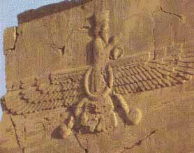
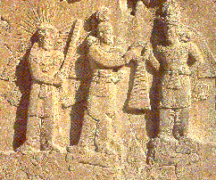
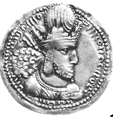
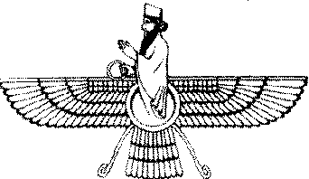
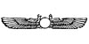
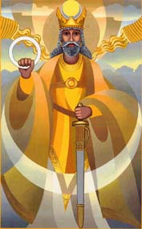

Faithists of Hapta
[Note: Words that are not explained here are explained in the article called Zarathustrians and Hinduism].
It is said that the word Hindu comes from the Indus River. In the 'Basis
of Vede' verse 5 of Saphah we are given that "Hapta Hendu, India"
is the "land of seven rivers".
There are many references in Aryan scriptures to this land:
'The fifteenth of the good lands and countries which I, Ahura Mazda,
created, was the Seven Rivers (Vendidad)
'Thou hast let loose to flow the Seven
Rivers' (Rig Veda)
Many Hymns from the Rig Veda end thus:
This prayer of ours may Varuna grant, and Mitra, and Aditi and Sindhu, Earth and Heaven.
Here Sindhu refers to a river. In the Avestan dictionary hapta or haptan is the number seven. In Sanskrit seven is Sapta (as in the Sapta Rishis, or seven sages). M. N. Dhalla shows us that Hapta Hindu or Sapta Sindhu means 'the land of seven (later five) rivers' which he says is the Panjaub [Punjab]; therefore 'Hapta' means seven.
The seven rivers are Indus, Saraswati, Ganga, Brahmaputra, Narmada, Krishna, Cauveri
Starting around 1900 BCE, Indo-Aryan tribes moved into the north-west of India from Central Asia in several waves of migration. The Vedic period is when the Vedas were composed of liturgical hymns from the Indo-Aryan people. The Vedic culture was located in part of north-west India, while other parts of India had a distinct cultural identity. The Vedic culture is described in the texts of Vedas which were orally composed and transmitted in Vedic Sanskrit. The Vedic period, lasting from about 1500 to 500 BCE, contributed to the foundations of several cultural aspects of the Indian subcontinent.
Historians have analysed the Vedas to posit a Vedic culture in the Punjab, and the upper Gangetic Plain. Many of the concepts of Indian philosophy espoused later, like dharma, trace their roots to Vedic antecedents. Early Vedic society is described in the Rigveda, the oldest Vedic text, believed to have been compiled during the 2nd millennium BCE, in the north-western region of the Indian subcontinent. At the end of the Rigvedic period, the Aryan society expanded from the north-western region of the Indian subcontinent into the western Ganges plain. It became increasingly agricultural and was socially organised around the hierarchy of the four varnas, or social classes. This social structure was characterised by the exclusion of some indigenous peoples by labelling their occupations impure. During this period, many of the previous small tribal units and chiefdoms began to coalesce into Janapadas (monarchical, state-level polities). Notable Janapadas are the Iron Age Kingdoms of Kuru, Panchala, Kosala and Videha.
The Sanskrit epics Ramayana and Mahabharata were composed during this period. Historians formerly postulated an "epic age" as the milieu of these two epic poems, but now recognise that the texts went through multiple stages of development over centuries. The existing texts of these epics are believed to belong to the post-Vedic age, between c. 400 BCE and 400 CE.
The Kuru kingdom (c. 1200–450 BCE) was the first state-level society of the Vedic period, corresponding to the beginning of the Iron Age in north-western India, around 1200–800 BCE, and it was there that the codification and redaction of the Vedic texts began, as well as with the composition of the Atharvaveda. The Kuru state organised the Vedic hymns into collections and developed the srauta ritual to uphold the social order. When the Kuru kingdom declined, the centre of Vedic culture shifted to their eastern neighbours, the Panchala kingdom.
In the epic times it was called Kuru-kshetra. Iron is still absent from the Rigvedic hymns, and makes its first appearance as "black metal" (syama ayas) in the Atharvaveda. The [seven] rivers Aruna, Ashumati, Hiranvati, Apaya, Kausiki, Sarasvati and Drishadvati or Rakshi washed the lands of Kurus.
At the time of Buddha, the Kuru realm was only three hundred leagues in extent. Legendary Buddhist stories attest that the capital of the Kurus was near modern Delhi. The Buddha taught the Great Discourse on the Foundation of Mindfulness, The Great Discourse on Causation, and the Way to the Imperturbable to the Kurus.
The period between 800 and 200 BCE saw the rise of new ascetic or "?rama?a movements" which challenged the orthodoxy of rituals, from which Jainism and Buddhism originated. The Central Ganges Plain, where Magadha gained prominence, forming the base of the Maurya Empire, was where the ?rama?ic movements flourished, and Jainism and Buddhism originated.
The time between 800 BCE and 400 BCE witnessed the composition of the earliest Upanishads which form the theoretical basis of classical Hinduism, also known as the Vedanta (conclusion of the Vedas),
Mahavira (c. 599–527 BCE), proponent of Jainism, and Gautama Buddha (c. 563–483 BCE), founder of Buddhism, were the most prominent icons of this movement.The Kurus were followers of Brahmanical way of life,They insisted on the purity of family life and cultivation of proper domestic relations and virtues, a way of life and philosophy that is reflected in the doctrine of Bhagvatdgita expounded at Kurukshetra. The Kuru Panchala kings are said to have performed sacrifice. There are numerous references to the Brahmanas of Kuru-Panchala country. The Atharvaveda refers to Parikshita as the king of the Kurus. Mahabharata refers to kings in the ancestral line of Parikshita, the grandson of Pandava Arjuna. Mahabharata and the Puranas attest the Kurus as the most important branch of the Ailas (descendants of king Puru-ravas Aila). The princes of Aila lineage are also designated as Karddameyas. The Karddama river is in Persia, hence the Kurus are often identified with Bahlika or Balkh (Bactria). Puru-ravas Aila, first king in the line of ancestors of the Kurus above, is mentioned in Ramayana stories as the son of a ruler who came, in some remote antiquity, from Bahli (Balkh) to Mid India (Ramayana, VII,103.21-22). Matsya Purana (12.14ff) mentions Illa-vrta varsa near Mount Meru (Pamirs) as the realm of the parent of Puru-rava Aila. Mahabharata locates the birth place of king Puru-ravas Aila on a hill near the source of a river called Ganga (3.90.22-25). This ancient Ganga is said to be different from the main Ganga and finds reference in ancient Sanskrit texts where it is found located in the neighborhood of the Pamirs. This river and river Sita (Yarkand) are said to be originating from Anavtapat Sarovar (in Pamirs or Karakoram) Papancha-sudanai also refers to the Kurus, as colonists from trans-Himalayan region known as Uttarakuru A section of the Kurus, known as Uttarakurus, is stated to be living beyond the Himalayan region in the days of Mahabharata and Aitreya Brahmana as we learn from Aitareya Brahmana verse (VIII.14). The Himalaya of the ancient Indian traditions extended from the east ocean to the west ocean. Mahabharata also attests that the ancestors of the Kauravas and Pandavas originally migrated from Uttarakuru. The above references would indicate that the ancestors of the Kurus of Middle India had migrated from Bahlika/Uttarakuru which was a region stated to be to the north of Himalaya /Hindukush. Bahlika (Balkh) was the original home the Madra peoples known as the Uttaramadras. This shows that Uttarakuru, the original home of the Kurus, was not precisely located in Bahlika, but probably in some nearby region, north of Bahlika in Central Asia, possibly bordering with it. Thus it appears likely that the Uttarakurus as immediate neighbors to the Uttaramadras/Bahlikas were located to north-east of Uttaramadras and to north of Parama-Kambojas (Badakshan/Pamir). If Bahlika is the same as Uttarakuru, then the Madras and Kurus in the remote antiquity were one people. The Puranas trace the lineage of the Pauravas, the line of kings who are related to the Kuru-Panchalas, to king Puru-rava Aila, who is stated to be king of Pratishthana.(near Allahabad). It is stated that Kuru was the son of king Samvarna and Tapti. He had given his name to Kurukshetra. At Kurukshetra, he had performed tapasya (penance) and pleased Indra. Kuru's descendants became known as Kauravas (Brahmanda Purana III.68.21). This Puranic view, in view of the evidence presented before, is not considered reliable. North of the Himalayas, possibly in the Tarim Basin, lay Uttarakuru or northern Kuru, a version of Shambhala which the Mahabharata describes as the blissful land of the sages towards which Arjuna, the warrior prince of the Bhagavad-Gita, travelled in search of enlightenment. It is described as a place of marvels where magic fruit trees yield the nectar of immortality. It is said to be one of four regions surrounding Mount Meru like the four petals of a lotus and to be the homeland of the siddhas, enlightened yogis famed for their miraculous powers.
Also, Haptans are referred to in Saphah:
"the Avanischor system, which descended to the Haptans and afterward
to the Hijans, and finally to the Vedes of the Upper Thibet"
Kabalactes, who seems to be the ultimate authority during the Hyan period
of Mithra inspiration, built his heavenly city, Haractu, above the
mountains of Yammalaga (which sounds like Himalaya)
twelve miles high, and broad as the land of Vind'yu. The lowest hadan
regions were only twelve miles above the earth.
Geographical data of the Rig Veda, especially the numerous rivers there
mentioned, infers that the Indo-Aryan tribes occupied the territory
roughly corresponding to the Indus Valley (Pakistan) and the Punjab of
today when the hymns were composed. The references to flora and fauna bear
out this conclusion.
A perhaps too easy solution is to regard Hyans as Aryans and Haptans as
their predecessors, the lost Vedic culture, the remnant of whom can be
found in the Zoroastrians and Parsee's of today.
The Aryans are envisioned as a nomadic and pastoral culture that
glorified war, established a patriarchal social structure of families
dominated by warriors and priests. They used advances in weaponry and
skill in fighting to conquer the agricultural and tribal peoples of the
fading Harappan culture.
[Note: current thinking (Graham Hancock's book Underworld, and the [then]
fundamentalist Hindu authorities) say that the Aryan invasion is a western
myth and that the Harrapan culture in the Indus valley civilisation (which
is also the newly rediscovered Sarasvati civilisation) accounts for the
later Vedas and Aryan/Avestan culture]
History tells us the Indus valley civilisation grew in 2750 BC, and the Harappan Civilisation collapsed between 2000-1900 BC. [After 900 years, Dyaus's prosperity ended, kings began to quarrel, and in 2180 BC there was a collapse of the Egyptian central government, marking the end of the Old Kingdom. Shortly after, Sudga and Osiris rebelled and began establishing themselves. The Middle Kingdom (2060-1570 BC) coincides with Sudga's and Osiris's rule. Dyaus fell about 1990 BC]
The writing with pictographic symbols at Mohenjo-daro was not extensive, nor alphabetic, nor has it been deciphered yet. The Harappan civilisation of the Indus Valley, Pakistan borrowed many ideas from Mesopotamia [which is just west of there]. Two seals of the Mohenjo-daro type were discovered at Elam and Mesopotamia, and a cuneiform inscription was unearthed at Mohenjo-daro.
From the First Book of God Ch.XIV, The first Bible of Vind'yu
These are the races of Brahma: …. The ascending caste of light in the
lower country (Ho-jon-da-tivi) was by Ram,
first; then Zerl, migrants from the land of
Ham.
[The "land of Ham" may be Sumer, in the west]
By about 3000 BC they were building mud-brick houses; burials in the
houses included funereal objects and pottery had fine designs and the
potters' marks. After 2500 BC farmers moved out into the alluvial plain of
the Indus River valley and achieved full-sized villages using copper and
bronze pins, knives, and axes; figurines of women and cattle indicate
probable religious attitudes.
The urban phase began about 2300 BC and lasted for about six hundred years
with elaborate cities like Mohenjo-daro, which had about 40,000
inhabitants congregated in well-built houses with private showers and
toilets that drained into municipal sewer lines. The largest structures
were the elevated granary and the great bath or swimming pool which was 12
by 7 meters. Around the pool were dressing rooms and private baths.
The people of the Harappan culture did not seem to be very warlike
although they hunted wild game and domesticated cattle, sheep, and goats.
Wheat and barley were the main food supplemented by peas, sesame, and
other vegetables and fruits, beef, mutton, pork, eggs, fish, and milk. The
potter's wheel and carts were used; children played with miniature toy
carts. Cotton, perhaps first used here, and wool were made into clothing.
The traditional theory is that Harappan culture declined when the Aryans
invaded from the northwest, though the decline was gradual and indicates
problems beyond foreign conquest.
Another source says tall, light-skinned, Indo-Aryans crossed the passes of the Hindu Kush mountains and supposedly appeared in Punjab and Sind around 1500- 1200 BC. They founded cities like Harappa and Mohenjo. In 1450 BC they conquered India. In 1000 BC they migrated into Ganges Valley.
The Vedic of Aryan India was shaped between 7,000 - 4000 BC in an age
that ended in about 3,500 BC. The oldest of the written Vedas is the RG
VEDA (hymn) written in Sanskrit between 1500 BCE to 1200 BC.
In hindsight, perhaps I should have called this "Faithists of the Hyan
period", because much of the Avestan scripture are prayers to the Gods of
Mithraic inspiration, the Lords of the Hosts in Heaven or Heads of
spiritual societies in atmospherea who I assume are of the days of the
Hijans or Hyans. From the above "the Avanischor system, which descended to
the Haptans came afterward to the Hijans (Hyans?), and finally to the
Vedes of the Upper Thibet".
In 'Basis of Vede' at the end of Saphah we read
MAZDAYACNIAUS, Faithists in the Great Spirit. Opposite to idolaters. The Haptans did not worship the Lords nor Gods, but revered them as exalted spirits sent from etherea, to minister to mortals, both through the temples and oracles, and in the family spirit circle, even as Christians of this day believe that Christ ministereth. With the Haptans, however, Mithra occupied the position that Christ doth in men's eyes, and the Lords and Lordesses, and Gods and Goddesses, were under Him, alternately with Yima.
One writer says:
"The Avesta looks with unrelenting abhorrence upon idols and images of
divinities. The conquering armies of Persia always destroyed the idols and
razed their temples to the ground. Herodotus writes that the Persians did
not erect idols. Sotion adds that they hated idols. We have it on the
authority of Berosus that the Achaemenian king Artaxerxes Mnemon (B.C.
404-358) had statues erected to Anahita in Babylon, Ecbatana, Susa,
Persepolis, Bactria, Damascus, and Sardis. Strabo describes the image of
Omanus, (Vohu Manah), as being carried at a later period in procession in
Cappadocia [in Turkey]"
The Zoroastrian Creed Today (YASNA 12 : 9)
I pledge myself to the MAZDAYASNIAN,
religion, which causes the attack to be put off and weapons put down;
which upholds khvaetvadatha (kin-marriage), which possesses Asha [truth, righteousness, world order,
eternal law] which of all religions that exist or shall be, is the
greatest, the best, and the most beautiful: Ahuric, Zoroastrian. I ascribe
all good to Ahura Mazda. This is the creed of the Mazdayasnian,
religion.
YASNA 12 - The Zoroastrian Creed
This creed probably dates to the earliest days of the faith, but seems to
have undergone some linguistic shift and subsequent recasting in the Old
Avestan dialect. It was probably intended to be recited before an open
assembly. The last phrase of verse 7, plus all of verses 8 and 9, are
incorporated into the daily Kusti ritual.]
1. I curse the Daevas.
I declare myself a Mazda-worshipper, a supporter of Zarathushtra, hostile
to the Daevas, fond of Ahura's teaching, a praiser of the Amesha Spentas, a worshipper of the Amesha
Spentas. I ascribe all good to Ahura Mazda, 'and all the best,' the
Asha-owning one, splendid, xwarena-owning, whose is the cow, whose is Asha,
whose is the light, 'may whose blissful areas be filled with light'.
2. I choose the good Spenta Armaiti
for myself; let her be mine. I renounce the theft and robbery of the cow,
and the damaging and plundering of the Mazdayasnian settlements.
3. I want freedom of movement and freedom of dwelling for those with
homesteads, to those who dwell upon this earth with their cattle. With
reverence for Asha, and (offerings) offered up, I vow this: I shall
nevermore damage or plunder the Mazdayasnian settlements, even if I have
to risk life and limb.
4. I reject the authority of the Daevas, the wicked, no-good, lawless,
evil-knowing, the most druj-like of beings, the foulest of beings, the
most damaging of beings. I reject the Daevas and their comrades, I reject
the demons (yatu) and their comrades; I reject any who harm beings. I
reject them with my thoughts, words, and deeds. I reject them publicly.
Even as I reject the head (authorities), so too do I reject the hostile
followers of the druj.
5. As Ahura Mazda taught Zarathushtra at all discussions, at all meetings,
at which Mazda and Zarathushtra conversed;
6. as Ahura Mazda taught Zarathushtra at all discussions, at all meetings,
at which Mazda and Zarathushtra conversed -- even as Zarathushtra rejected
the authority of the Daevas, so I also reject, as Mazda-worshipper and
supporter of Zarathushtra, the authority of the Daevas, even as he, the
Asha-owning Zarathushtra, has rejected them.
7. As the belief of the waters, the belief of the plants, the belief of
the well-made (Original) Cow;
as the belief of Ahura Mazda who created the cow and the Asha-owning Man;
as the belief of Zarathushtra, the belief of Kavi
Vishtaspa, the belief of both Frashaostra and Jamaspa; as
the belief of each of the Saoshyants
(saviours) -- fulfilling destiny and Asha-owning -- so I am a
Mazda-worshipper of this belief and teaching.
8. I profess myself a Mazda-worshipper, a Zoroastrian, having vowed it and
professed it. I pledge myself to the well-thought thought, I pledge myself
to the well-spoken word, I pledge myself to the well-done action.
9. I pledge myself to the Mazdayasnian religion, which causes the attack
to be put off and weapons put down; which upholds khvaetvadatha
(kin-marriage), which possesses Asha; which of all religions that exist or
shall be, is the greatest, the best, and the most beautiful: Ahuric,
Zoroastrian. I ascribe all good to Ahura Mazda. This is the creed of the
Mazdayasnian religion.
The Book of Fragapatti tells us that after Fragapatti built Jehovih's
throne in Haraiti, he appointed his
High Council of the first house of Mouru,
Gods and Goddesses of dawn. They included Caoka, God of Airram; Ata-kasha,
God of Beraitis; Airyama, God of
Kruse; Pathema, Goddess of Rhon; Maidhyarrya, Mistress of Karyem; Gatha-Ahunavaiti, Goddess of Halonij;
Rama-quactra, God of Veres; Vahista,
God of Volu; Airam-ishya, God of Icisi, the
Myazdas; Haptanhaiti, God
of Samatras; Yima, God of Aom; Sudhga, God of Laka; I'ragha, God of Buhk-dhi; Elicic, Goddess of N'Syrus;
Harrwaiti, Goddess of Haut-mat, in a'ji; Dews, Goddess of Vaerethagna; Wettemaiti, Goddess of Dyhama;
Quactra, Goddess of AEgima; Ustavaiti, Goddess of Maha-Meru; Cura, Goddess
of Coronea; Yenne, Goddess of Aka; Caoshyanto, God of Aberet; Rathweiska,
God of Huri; Cpentas, God of Butts;
Vairyo, God of Nuga-gala; D'Zoata and her brother, Zaota,
God and Goddess of Atarevasksha; Ratheweiskare, God of Nece; Yatha, God of
Ameshas, and Canha, God of Srawak.
Also Thraetem, Hakdodt, Maidoyeshemo
were Lords of Shem serving Yima in the time of Zarathustra.
I assume that some of these names were falsely assumed by the gods of the lower heavens given below.
In 'Basis of Vede' (Saphah)
The Lords of the Hosts in Heaven or Heads of spiritual societies in
atmospherea, of those days ministering through the temples and oracles to
mortals of the [later] Hyan period, and embraced in Mithra inspiration,
were as follows:
Maidhyozaremaya, Moidhyosheema
(Maideashenea), Paitis-Hahaya
(Patishahaya), Ayathrecma
(Ayathrema) Maidhyairya
(Maidyarrah) Hamacpathmoedaya
(Hamachapathmada), the Holy Lordess, the Gatha-Ahunavaiti
(Aunviti), Yacna-Haptan-Haiti
(Haptanaihaiti), the Goddess Mother, Gatha-Ustavaiti
(Ustavaiti), her Holy Sister, Goddess Gatha-Cpenta-Mainyu
(Cpenta'Mainyus), her Holy Daughter, Goddess Gatha-Vohu-Khsha-Thra
(Kshathra), the Lord of Measure, Airyama
(Airyamaishya), Fshnsha-Manthea
(Fshushamanthra), Hadhaokhta
(Hadhaokhta), Creator, Ever Present Spirit in all places, Ruler over all
else and Dispenser, Yemehataman, Vahistoisa, Cpenta-armaiti,
Zaothra
and Barecma, Mithra,
Kamaqactra, Havanana, Aarevahsha,
Roethwiskare, Vohu-Kasha, Aiwyoonhana, Nairayo-canha, Asha-vahista,
Haome, Lord of Haoma rites, Frava-daiti, Lord of Fravishes, Pailvish-hahin
and Ustav, Beryejaga, Avathrema, Tistrya
and Yima, Son of the Sun, the All
Light.
Of the second rank above these were:
The Gods of the United Hosts of Heaven.
The Creator, Chief over all, Yima
and Mithra,
Amesha, Cpentas,
Havanyi, Cavaghi
and Vicya, Rapithurna.
Fradotfshu (Fradat-fshu)
and Zantuma, Fradatvira and
Dagyevma , Aiwicruthrema-Aibigaza,
Fradat-vicpanum-hujyaiti, Vishaptatha, Ish-Fravashi,
Athwya and Kerecacpa, promoted by special decree.
In addition to the above, the oagas (Gathas) of Zinebabait (afterward
Lower India) the Zend, The Lord Gods, that is, officers of kingdoms in
heaven and ruler over nations on earth.
1. Khahnaothra, an Ahurian of the Zarathustrian period.
2. Ardvi-cara, an Ahurian of the Zarathustrian period.
3. Rashnu, a Fragapattician of
the Yi-ha period.
4. Haha-Naepta (Goddess) of the host of Fragapatti, of the Theantiyi
period.
5. Iaya-Haptanhaiti, special to Haptan, of the Hi-ga period.
6. Ctatoa-Zacnya (Goe-howjhi), an Ahurian of the Fragapatti period.
In Ushtai-bhonyia-paria-vi-hyiyi and to their descendants, the Gujerati and Huzvaresh, the Ahura, is omitted,
as in the original. Thei and Aph and the Creator, are called Armadz, or
Ormazd, or Ormuzd.
The above names are recalled in the beginning of the Vispered (see further down )
The Aryan Pantheon or "Lords of the Hosts in Heaven" (Heads of spiritual
societies in atmospherea) of those days spans as far back as the time of Naotara in the period of Aph [the
time of the flood ~22,150 BC.], to the hosts of Fragapatti of the
Theantiyi period [~7,000 BC], Fragapatticians of the Yi-ha period,
Ahurians of the Zarathustrian period [~5850 BC.], and Haptans
of the Hi-ga period [maybe around the time of Brahma - ~3,950 BC].
Note: The Yi-ha language is first referred to in the Book of Osiris
(10,000 BC.), describing men striving to reach to heaven with a multitude,
"a babble, a tower" of words but instead reaping food for hada (ills and
affliction). Here it must refer to a school after the time of Fragapatti
that had its roots in that period.
In the Book of Wars [from the time of Brahma to Capilya (~1550BC)] much of the Diva was falsely deposed by Deity (De'yus or Dyaus - a heavenly council the name of which its conjurer assumed to himself) and became established in India by Sudga from ~3000 BC. [the time when the wars of the Baghavad Gita (a small part of the Mahabharata) were fought by Arjuna and Krishna on Northern India's Kuruksetra plains, although others say the time of the great Bharata [Maha means Great, thus Mahabharata] war was about 900 BC.
Dyaus's doctrines (the earlier version of "Genesis") were given to mortals according to their language and capacity to understand ~2,800 BC. (therefore Genesis does not come across the same as the Rgveda 'Song of Creation', Book 10 Hymn 129). The Indus valley civilisation is said to have been at its height at 2600-2500 BC).
The Oahspe says of those times:
" Of Arabin'ya, Parsi'e and Heleste Parsi'e was foremost. It was here
great Zarathustra was born and the first great City of the Sun was built,
Oas. A strip of Parsi'e'an land cut betwixt Jaffeth and Vind'yu (Nepal?),
and extended to the sea in the far east; but the great body laid to the
west, covering the Afeutian Mountains (Afghanistan?). The sacred little
people, the I'hins, dwelt in the wilderness from where also sprang the
Listians or 'Shepherd Kings'. One-fourth of the people of Pars'ie were
Listians, but the other three-fourths lived in the fertile regions of
Parsi'e.
The cities were filled with mills, and factories, and colleges, and common
schools, free for all people to come and learn; and altars, and temples of
worship, and oracle structures, observatories for studying the stars,
which were mapped out and named even as their names stand to this day. And
next to these were the houses of philosophy, in all the cities; where
great learned men undertook to examine the things of earth.
Of such like, then, were the people over whom De'yus, named Lord God, had
set out to subdue for his own glory knowing that by their researches in
such matters for many generations they had strayed away from Jehovih."
The Oahspe says of India before Dyaus tried to gain a foothold there
(2800 BC?):
"Great was the peace and beauty and glory of Vind'yu in that day. Her
rivers and canals coursed the country over, and her industrious sons and
daughters, two hundred millions, were, in the eyes of the angels, the
pride and glory of the earth. Hundreds of thousands of her people were
prophets and seers."
The Bundahishn says of the angels of the higher heavens in defending
righteousness:
"On the conflict of the creations of the world with the antagonism of the
evil spirit it is said in revelation, that the evil spirit, even as he
(his legions) rushed in and looked upon the pure bravery of the angels,
his own violence wished to rush back on himself."
Oahspe says of the vastly outnumbered ashars being rushed upon by
Dyaus's Lord Osiris's warrior angels:
There stood His angels, so strong in faith, unmoved and majestic, that
even the assailing spirits halted, overawed.
But it was after Sudga became heavenly ruler that the Sarasvati and
Indus valley civilisation ended. Sudga prospered for four hundred years
[~2120 - 1720 BC] and with Te-in and Osiris were the mightiest Gods that
ever ruled on the earth. The Harappan Civilisation in Hindus Valley
collapsed between 2000-1900 BC.
. One could be tempted to identify the 'Golden Age' spoken of in Vedic
Tales as the Vedic culture before Deity was established, which overlapped
into the pomp and ceremony of Dyaus's time of glory, described in the
early Rig Veda, which later becomes the ritual supplication and worship of
the lower gods, and transformed into the military discipline of Sudga's
reign that coincides with the so called Aryan military invasion.
Historians say that in 2000 BC Indo-Aryans split into migratory groups.
One of these left their Proto-Aryan homeland (the eastern Iranian steppes
of ancient Sogdiana, Chorasmia, and Bactria) to cross the Caucasus
Mountains and established the Kingdom of Mitanni on the NW frontier of the
Kassite Kingdom and migrated into Anatolia, another went into modern day
Iran, Afghanistan and northwest India.

The meaning of FRAVASHI
given in Saphah:
FRAVASHI, pure spirits of the
Faithist order, ie., spirits who are not bound to idols, Gods, nor
Saviours, but having faith in Ahura'Mazda, the Creator. The opposers in
heaven to the Fravashi were:
The Daeva , Pairika,
Cathra, Kaoza and the Karapana.
In the above list of the Lords of the Hosts in Heaven (Heads of spiritual societies in atmospherea) of those days, Frava-daiti is given as Lord of Fravishes.
Also
Naotara, of Aphian period
[~22,150 BC], an instructor, who gave many sciences to mortals. These
sciences and religious ceremonies were afterward called his sons, and they
are now called Fravashis. In
addition to the sciences this Lord God, through oracles and otherwise,
revealed two hundred and seventy kingdoms in the lower heavens, the most
important of which are: Zairi-vairi, Yukhata-vairi, Crisookhshau,
Kerecaokhshan, Vanara, Bujicravo, Berejzarsti, Tizhyarsti, Perethwarsu,
Vezhyarsti, Naptva, Vazhacpa, Habacpa, Victavaru and Frans-hanm-vareta.
Here are these names again in the same order along side verses from the
Frawardin (Fravadin) Yasht. The order of the verses has not been
rearranged so as to show how both orders exactly match. The verses are
taken from a long list of Fravashis mentioned below.
| Zairi-vairi
----------------- We worship the Fravashi of the holy Zairi-vairi; Yukhata-vairi -------------- We worship the Fravashi of the holy Yukhata-vairi; Crisookhshau -------------- We worship the Fravashi of the holy Sriraokhshan; Kerecaokhshan ------------ We worship the Fravashi of the holy Keresaokhshan; Vanara ---------------------- We worship the Fravashi of the holy Vanara; ------------------------------- We worship the Fravashi of the holy Varaza; Bujicravo ------------------ We worship the Fravashi of the holy Bujisravah; Berejzarsti ----------------- We worship the Fravashi of the holy Berezyarshti; Tizhyarsti ------------------ We worship the Fravashi of the holy Tizyarshti; Perethwarsu --------------- We worship the Fravashi of the holy Perethu-arshti; Vezhyarsti ----------------- We worship the Fravashi of the holy Vizhyarshti. Naptva, -------------------- We worship the Fravashi of the holy Naptya; Vazhacpa, ------------------ We worship the Fravashi of the holy Vazhaspa; Habacpa, ------------------- We worship the Fravashi of the holy Habaspa. Victavaru ------------------ We worship the Fravashi of the holy Vistauru, the son of Naotara. Frans-hanm-vareta. ------- We worship the Fravashi of the holy Frash-ham-vareta ; ------------------------------- We worship the Fravashi of the holy Frasho-kareta. |
I left the last line, which is next in the long continuation of similar
lines, in because Frasho-kareta (or final
renovation of the universe) may be still another of the lower heavens,
along with Frash-ham-vareta etc.
Notice that the above names of kingdoms in the lower heavens have been
somehow identified with Fravashis
(as seen in the corresponding Fravadin Yasht verses along side), similar
to what Saphah said about the sciences and religious ceremonies.
Vistauru (near the bottom of
the above list), recalled as the son of Naotara,
may have been once understood as a science or religious ceremony.
(Continuing with Saphah)
All of these divisions [referring to the two hundred and seventy kingdoms
in the lower heavens], including the two hundred kingdoms, had
spirits-in-chief (Lord Gods) to each and every one who took up stations in
the temples of worship on earth, and employed thousands of spirit
servants, whom they allotted to the different mortals who came thither to
worship, to be their guides and guardians, day and night. Through the
prophets and high priests in the midnight worship, and also at dawn in the
morning, these spirits appeared in tangible forms, taking part in the
ceremonies.
Also:
From the Yashts (Hymns) of the KHORDA AVESTA (Book of
Common Prayer)
Ardui Sur Bano Yasht (Hymn to the Waters) XIX.
76. Vistauru, the son of Naotara worshipped her by the
brink of the river Vitanghuhaiti, with well-spoken words.
Fravishis are frequently mentioned in all the avesta except the Vendidad
From the VISPERAD 11.
15. "And we make these known in our celebrations to the good Fravashis of the saints which are
formidable and overwhelming in their aid."
"We worship the Fravashis
of holy men and holy women (wherever they may be, those devoted to the
Order of the Faith)."
The Diadem of the Farohar 
Kingship was believed to originate from Ahura Mazda and transferred
through successive dynasties to the Sasanians - to be reclaimed by the
Creator at the final renovation of the universe [called frasho kereti in
Avestan and frashagird in Pahlavi]. Thus the Sasanid family claimed both
descent and kingship from all the earlier, divinely chosen royal families
of Iran; where such connections did not exist, they were fabricated. The
monarch and his family were held to be scions of the gods.
Although a king's glory, sovereignty, and authority arose from Ahura
Mazda, and he himself had descended from the gods [whatever that means in
this context], the king could never lay pretensions to apotheosis or to
being a god incarnate, and was never regarded as such by his subjects. No
monarch ever sought deification nor did any Sasanian king occupy position
in Iranian society comparable to that of pharaoh in ancient Egypt. He was
at all times considered a mortal. It is clearly stated in the Denkard that
"all corporeal kings are men" not gods, and never regarded as divine.
Members of the royal court, government administrators, priests, and
commoners referred to the monarch as "kings of kings" (Shahan-Shah in
Pahlavi) and "lord". No mention was made of the king being "of the seed
from the gods."
According to the doctrine of sacral kingship "the
symbol of the Beneficent Spirit manifests itself on earth in the good and
righteous king, one whose will is inclined on increase (Khshathra), whose nature is pure, whose
desires for his subjects are righteous". [Like ascension, the superior
nature of Dominion, which is a quality of the subltler, superior spiritual
realms above, provides increase].
The Sasanian monarch's function was to maintain the religiously sanctioned
social structure of the empire and thus to ensure that law, order, and
righteousness were supreme on earth. The king was believed to possess
ritual and actual physical perfection and prowess
The will of a righteous king was held above the soul, mind, wisdom and
religion. In the interconnection of the material and spiritual realms, as
established by Zoroastrian doctrine, the body was equated to the soul,
wealth to virtue, honour to righteous effort, the king to the Zoroastrian
religion, and generosity to wisdom.
The monarch served as the divinely ordained link between man, the
microcosm and god, the macrocosm [something that in this day we are all
expected to attain]. The Denkard instructs: "Let your thought transcend
your own will, and pass to the supreme will and lord upon the earth, the
king recognized by the religion. And let it pass from him to the highest
lord of all the spirits, the creator Ahura Mazda".

The Sasanian monarch was required to have received training as a magus
(Old Persian: magu-, magupati-, Pahlavi: mowbed, New Persian: mobad). The
crowns of the kings portrayed on their coinage appear to have been derived
from crowns of various Zoroastrian deities. The crowns of Emperor Pirooz,
Xusro II, Emperor Hormozd V Xusro III, and Emperor Yazdegerd III showed
the wings of the war god Emperor Vahram (the Avestan Verethragna)
and the water goddess Anahid (the Avestan Anahita).
The depiction of rays conveyed the ruler's claim to possessing the
grace of Mihr (the Avestan Mithra). In Roman investiture scenes, sub-kings
and even kings receive sovereignty from mortal rulers. In Byzantine art
Christ does not hand sovereignty itself directly to a monarch. In 383 AD
[soon after Constantine] rock reliefs and claims to divine descent ceased.
E:\Rainbow\Sacral Kingship in Sasanian Iran (CAIS at SOAS).htm
The Pahlavi word "faravahar" derives from ancient Iranian (Avestan) word
fravarane which means "I choose". Fravashi derives from "protect,"
implying the divine protection of the guardian spirit, the fravashi. From
these words come the later Middle Persian words fravahr, foruhar, or
faravahar.
It is not known what the ancient Persians called their winged disc. The
use of the word faravahar to describe the Winged Disc is modern.
It is mainly the Indian Parsi Zoroastrians that call the Winged Disc a
fravashi rather than a faravahar. The concept of the fravashi as guardian
spirit does not occur in the Gathas of Zarathushtra but in later
Zoroastrianism.
The Faravahar, or Farohar is said to depict a spirit of human being that
exists after death, and symbolises a soul's spiritual progress towards a
far-off event to which the whole of creation moves - the state of Frasho-kereti, the ultimate union
with Ormazd or final renovation of the universe.
Some Zoroastrians make a distinction between Farohar and Fravashi in
relation to prayers and rituals. Some rituals are for doing good to the
living by appeals made to the Fravashis (Guardian Spirits of each
creation). Other ceremonies are performed to help and create peace to the
departed souls (Farohars) in the unseen world. Oahspe would make no
distinction, since the higher and lower angels are all spirits of the
dead. It depends on one's understanding whether the Avesta makes the
claimed distinction.

Rituals invoke a particular Fravashi for their special blessing. Fravashis supposedly act as mediums or channels for conveying the effect of ritual-force to the unseen world and for bringing the response of the force from the angels and archangels down to this earth. The Symbol of the Farohar
The symbol seems to originate with the first revelation of God's
Word to Zarathustra.
First, Ormazd was, and He created all created things. He was All; He is All. He was All Round, and put forth hands and wings. Then began the beginning of things seen, and of things unseen.
Hands and wings here seem to represent the duality of corpor and spirit (or realm of the mind) respectively. Sassanians used a Christian-like circular halo in place of the Winged Disc.
The wavy streamers on either side of the disc (shown right) were once
bird's legs as evidenced in Assyrian or Persian designs [or serpents as in
the Oahspe Egyptian
Tablet] but became stylised, and now are said to represent
Spenta-Mainyu (Holy Spirit or good mind) and Angramainyu (evil mind).
The circle in the middle of the Fravashi's trunk symbolises our immortal
spirit, having neither a beginning nor end. One hand of the Fravahar holds
a ring [diadem] considered by some interpreters as the ring of covenant.

The stylised spread-eagle pattern, similar to the winged sun-disc of
Horus, appears above the carved figure of a Hittite king (1400-1200 B.C).
In Syria it is shown on a seal from the Mitanni civilisation (c.1450-1360
BC). The Assyrian winged disk (shown right) represents the sun God
Shamash. It is the symbol of the Assyrian god Assur when there is a figure
inside or arising from within the disc. By the time of the Achaemenids
(600-330 BC) the Faravahar had already been in use for at least 1000
years.
It is not certain whether or not the Winged Disc represented the Fravashi
of ancient Persian art, but in the popular religious art of ancient Egypt
the immortal soul of a human being (ba) is represented by a stylised bird
with a human head shown in many different styles and positions, including
the "spread-eagle". In Egyptian and Persian lore the spirits of the dead
could leave their tombs and fly about the land of the living, just as the
fravashis gather just before the New Year. Amulets depicting the "ba-bird"
adorned mummies, even in Hellenistic times.

The crescent in a circle, [shown on the crown in this modern rendition of the Amesha Spenta Kshathra, who holds a diadem] with ribbons streaming from either side was a symbol of the Sassanian monarchy and its divine protection. After the Arab conquest, the winged disc, the winged crown, and the ring of kingship fade into obscurity but the crescent became the prime symbol of Islam.
In 1925 and 1930 a Parsi scholar identified the Faravahar as the symbol
of the fravashi or guardian spirit of Zoroastrian teaching, and the
Persepolis winged disc began to be used as a symbol for Zoroastrianism. .
In 1928, another Parsi Avesta scholar identified the
Winged Disc not as Ahura Mazda or as fravashi, but as the khvarenah or
royal glory, and the Faravahar began to be incorporated into the design of
Zoroastrian temples, publications, and ornaments (as seen atop a fire
temple in Shiraz, Iran).
The Avestan word for Royal Glory is khvarenah, which comes from the
Avestan root khvar or "shining;" and is also the word for the sun.
Khvarenah has the connotation of "glory" and "divine grace." It was a
God-given gift, which legitimated the King's rule, but could leave him if
abused. Yima or Jamshid possessed the glorious khvarenah but he became too
proud and arrogant and lost the khvarenah. Some stories say that he even
called himself a god.
Yasna 32 of the Gathas:
8. "Among these sinners, we know, Yima was included, Vivanghen's son,
who desiring to satisfy men gave our people flesh of the ox to eat. From
these shall I be separated by Thee, O Mazda, at last.
This is the Zoroastrian translation:
Among those sinners, Yima (Jamshid), the Son of Vivanghan is known to
fame. Desiring to make happy the mortals and convince his own self, he
contemplated the Almighty. I shall have full satisfaction with Thy
judgement, O Lord of Wisdom, in respect of the sinners on the final day of
Judgement.
Glory is seen to have wings
in this verse from the Zamyad Yasht (Yasht 19, 34):
"But when he (Yima) began to find delight in words of falsehood and
untruth, the Glory was seen to fly away from him in the shape of a
bird."
Khvarenah and the Sacred Fire
In Sassanian art, where the Winged Disc was no longer used, the khvarenah
was depicted as a circular halo around the head of the King, similar to
Christian saints. The Sassanian halo and the idea of the khvarenah can be
compared to Jewish and Christian light-symbolism. In Matthew 17 the light
of the Transfiguration (or the "Uncreated Light of Eastern Christians")
shines around the figure of Christ during the Transfiguration.
In the Atash Nyayesh (Litany to Fire) of the KHORDA AVESTA, the
Zoroastrian prayer to Fire, the khvarenah is identified with the light of
the Sacred Fire.
"9. In order to be ever burning in this house, in order to be blazing
in this house, in order to be increasing in this house, even throughout
the Long Time, until the mighty Renovation.
10. Give me, O Fire, son of Ahura Mazda! well-being, sustenance, life
immediately, well-being, sustenance, life in abundance; knowledge,
holiness, a ready tongue, understanding for (my) soul; and afterwards
wisdom (which is) comprehensive, great, imperishable.
12. Give me, O Fire, son of Ahura Mazda, the Best World of the
righteous, the shining, the all-happy, so that it may fulfil my wish,
now and for ever, so as to attain to good reward, and to good renown,
and to long happiness of my soul!
I desire worship and adoration and strength and force for Fire, son of
Ahura Mazda. O Fire! holy warrior, O Yazata
full of fortune, O Yazata full of healing; to Fire, with all fires; to
the Yazata Nairyosangha, offspring of sovereignty (Khshathra).
May the powerful and victorious fires - Adar
Gushasp, Adar Khordad
and Adar Burzin Meher and
other Adaran and Atashan which are established in their proper places
(dad-gah) be on the increase. May these be on the increase - these fires
which possess power and victory. May the knowledge, promulgation, and
glory of the Mazdayasnian law and religion be in the seven regions of
the earth! So be it! I must go thither (3). Ashem Vohu....
(Recite facing south:)
To the creator of the world, to the Mazdayasnian religion [known
elsewhere as the religion of Nerth], the Law of Zarthusht. Homage to
you, O good tree, righteous, created by Mazda [Nerth].
Ashem Vohu....
With propitiation of Ahura Mazda. Homage to you, O Fire of Ahura Mazda,
O good created, great Yazata.
Ashem Vohu.... "
[The three greatest sacred fires of Zoroastrianism are Adar
Khordad [Also known as Adar Farnbag] and Adar Gushasp and Adar Burzen-Mihr
(Pahlavi). They are said to be placed in a temple by Kay Vishtasp (Kavi
Vishtaspa) himself, after they had revealed many things visibly, in order
to propagate the faith.
Khordad is the name of the third month (Oct to Nov) and the sixth day of
each month. Khordad is also another name for the Amesha Spenta Haurvatat.]
From the Bundahishn ("Creation")
Chapter 17. On the nature of fire it says in revelation, that fire is
produced of five kinds, namely, the fire Berezi-savang, [in the earth
and mountains and other things, which Ohrmazd created in the original
creation, like three breathing souls (nismo). Through the watchfulness
and protection due to them the world ever develops (vakhshed)] the fire
which shoots up before Ohrmazd the lord; the fire Vohu-fryan, the fire
which is in the bodies of men and animals [which consume both water and
food]; the fire Urvazisht, the fire which is in plants [consume water
and no food]; the fire Vazisht, the fire which is in a cloud [consumes
food and no water] which stands opposed to Spenjargak in conflict; the
fire Spenisht, the fire which they keep in use in the world [consume no
water and no food], likewise the fire of Warharan.
And in the reign of Tahmurasp, when men continually passed, on the back
of the ox Sarsaok, from Xwaniratha to the other regions, one night amid
the sea the wind rushed upon the fireplace -- the fireplace in which the
fire was, such as was provided in three places on the back of the ox --
which the wind dropped with the fire into the sea; and all those three
fires, like three breathing souls, continually shot up in the place and
position of the fire on the back of the ox, so that it becomes quite
light, and the men pass again through the sea.
And in the reign of Yim [Jamshed] every duty was performed more fully
through the assistance of all those three fires; and the fire Adar
Farnbag was established by him at the appointed place (Dadgah) on the
Gadman-homand ('glorious') mountain in Khvarizem, which Yim [Jamshed]
constructed for them; and the glory of Yim [Jamshed] saves the fire Adar
Farnbag from the hand of Dahak [Zohak].
In the reign of King Vishtasp, upon revelation from the religion, it was
established, out of Khvarizem, at the Roshan ('shining') mountain in
Kavulistan, the country of Kabul),
just as it remains there even now.
The fire Adar Gushnasp,
when Kay Khosraw was extirpating the idol-temples of Lake Chechast it
settled upon the mane of his horse, and drove away the darkness and
gloom, and made it quite light, so that they might extirpate the
idol-temples; in the same locality the fire Adar Gushnasp was
established at the appointed place on the Asnavand mountain.
The fire Adar Burzin Mihr
continually afforded protection; and when the glorified Zartosht was
introduced to produce confidence in the progress of the religion, King
Vishtasp and his offspring were steadfast in the religion of God, and
Vishtasp established this fire at the appointed place on Mount Revand,
where they say the Ridge of Vishtasp (pusht-i Vishtaspan) is.
All those three fires are the whole body of the fire of Warharan, together with the fire of the world, and those breathing
souls are lodged in them; a counterpart
of the body of man when it forms
in the womb of the mother. And a soul from the
spirit-world settles within it,
which controls the body
while living; when that body dies, the body mingles with the earth, and
the soul goes back to the spirit.
The hearth of the people was in the home of the king, who was the
embodiment of the people; loyalty to him was loyalty to everyone and his
fire was the people's fire.
Of the several fires during a Vedic ritual, the round one, the
garhapatyagni, is tended by the wife of the person the sacrifice is being
performed for.
Westya is the least personified of the Proto-Indo-European deities, being
actually present in the flame on the hearth. Vesta and the Greek Hestia
had no myths told about her. In the round temple of the Vestal Virgins at
Rome (the other temples in Rome were rectangular) burned a fire that was
not allowed to go out. It was tended by the Vestal Virgins, the eternal
fires of Hestia, in her round temples were tended by unmarried women.
The famous fire of Brighid
at Kildare, described by Gerald of Wales in the 12th century, was a
virgin-tended hearth. In the time when it is recorded, the virgins are
nuns ("brides of Christ") and Brighid is a saint. A fire of the god
Perkunas in 15th century Lithuania was tended by women who were put to
death if the fire went out.
From "http://www.ceisiwrserith.com/pier/deities.htm"
YASNA 43 (From Ushtavaiti Gatha)
4. Then shall I recognise thee as strong and holy, O Mazda, when by the
hand in which thou thyself dost hold the destinies that thou wilt assign
to the Liar and the Righteous, by the glow
of thy Fire whose power is Right, the might of Good Thought
shall come to me.
5. As the holy one [Spenta] I recognise thee, Mazda Ahura, when I saw thee
in the beginning at the birth of Life, when thou madest actions and words
to have their meed [reward] -- evil for the evil, a good destiny for the
good -- through thy wisdom when creation shall reach its goal.
6. At which goal thou wilt come with thy holy Spirit, O Mazda, with
Dominion [Khashathra], at the same with Good Thought [Vohuman], by whose
action the settlements will prosper through Right [Asha, truth]. Their
judgments shall Piety [faith or Armaiti] proclaim, even those of thy
wisdom which none can deceive.
9. As the holy one I recognise thee, Mazda Ahura, when Good Thought came
to me. To his question, "For which wilt thou decide" (I made reply). "At
the gift of adoration to thy Fire,
I will bethink me of Right so long as I have power.
The khvarenah is granted to great benefactors of the world. In the Gathas, these benefactors are called saoshyant, an Avestan word which means "saviour." Later saoshyant acquires a messianic, mythical meaning. The Saoshyant enjoys the blessing of the khvarenah or 'God's Grace'. It is enfolded within everyone, but with those who are great in virtue it is more radiant and powerful. By growing in goodness we cultivate khvarenah, which is the light of our excellence.
Although the fravashi is unrelated theologically to the khvarenah, they
both serve as embodiments of divine guidance and grace.
The Fravashi is the part of the human soul that is divine, unpolluted, and
incorrupt, its perfection always within us as an ideal to reach our divine
guardian (guide). Every human being has a fravashi; even the divine
spirits have them. Once a human being has finished life on earth, the
fravashi, the higher individuality of that person, returns to Heaven.
The fravashi may be the inspiration for the Jewish and Christian belief in
the "guardian Angel," which always beholds the face of God (Matthew 18:10,
and Swedenborgs "Heaven and Hell").
In the later books of the Avesta the fravashis of the righteous are
invoked as fierce and mighty warriors for the Good.
In a long prayer called the Farvardin Yasht, there are litanies praising
and reverencing the fravashis of the early "saints" and heroes of
Zoroastrian tradition.
The fravashis of the good departed are supposed to return to earth on
special days, and towards the very end of the Persian year, in March, just
before the Persian New Year, there are ceremonies to honour the fravashis
of the righteous. The Winged Disc has come to signify the divine fravashi
hovering above, an image of the perfection of the soul that can lead us
forward to good thoughts, words, and deeds.
Frawardin/Fravadin Yasht/Yast (Hymn) [from the
Khorda Avesta]
[This Yasht is for the worship of Fravashis.
Each month and day of the Zoroastrian calendar is dedicated to an Amesha
Spenta (Bounteous Immortal) or a Yazata (Adorable Spiritual Being). The
only exception in the calendar is Fravardin (the Guardian Spirit or
fravashi) who has the first month and 19th day of each month, dedicated to
it. [Some make no distinction between Fravashis, Amesha Spentas and
Yazatas, except in rank.
Fra-vakshi, Faravashi, Fravarteen, Farvardin can mean the Divinity in
humanity, the unfailing guide of the erring soul (urvaan), the soul's
growth-lever, to perfection. ]
Unto the awful, overpowering Fravashis of the faithful; unto the
Fravashis of the men of the primitive law; unto the Fravashis of the
next-of-kin, Be propitiation, with sacrifice, prayer, propitiation, and
glorification.
Yatha ahu vairyo: The will of the Lord is the law of holiness....
1. Ahura Mazda spake unto Spitama Zarathushtra, saying: 'Do thou
proclaim, O pure Zarathushtra! the vigour and strength, the glory, the
help and the joy that are in the Fravashis of the faithful, the awful
and overpowering Fravashis; do thou tell how they come to help me, how
they bring assistance unto me, the awful Fravashis of the faithful.
2. 'Through their brightness and glory, O Zarathushtra! I maintain that
sky, there above, shining and seen afar, and encompassing this earth all
around.
3. 'It looks like a palace, that stands built of a heavenly substance,
firmly established, with ends that lie afar, shining in its body of ruby
over the three-thirds (of the earth)"; it is like a garment inlaid with
stars, made of a heavenly substance, that Mazda puts on, along with Mithra and Rashnu
and Spenta-Armaiti, and on
no side can the eye perceive the end of it.
4. 'Through their brightness and glory, O Zarathushtra! I maintain Ardvi
Sura Anahita, the
wide-expanding and health-giving, who hates the Daevas and obeys the
laws of Ahura who is worthy of sacrifice and prayer in the material
world,
5. 'Who makes the seed of all males pure, who makes the womb of all
females pure for bringing forth, who makes all females bring forth in
safety, who puts milk in the breasts of all females in the right measure
and the right quality;
6. 'The large river, known afar, that is as large as the whole of all
the waters that run along the earth; that runs powerfully from the
height Hukairya down to the sea Vouru-kasha.
7. 'All the shores of the sea Vouru-kasha are boiling over, all the
middle of it is boiling over, when she runs down there, when she streams
down there, she, Ardvi Sura Anahita, who has a thousand cells and a
thousand channels; the extent of each of those cells, of each of those
channels, is as much as a man can ride in forty days, riding on a good
horse.
8. 'From this river of mine alone flow all the waters that spread all
over the seven Karshvares; this
river of mine alone goes on bringing waters, both in summer and in
winter. This river of mine purifies the seed in males, the womb in
females, the milk in females' breasts.
9. 'Through their brightness and glory, O Zarathushtra! I maintain the
wide earth made by Ahura, the large and broad earth, that bears so much
that is fine, that bears all the bodily world, the live and the dead,
and the high mountains, rich in pastures and waters;
10. 'Upon which run the many streams and rivers; upon which the many
kinds of plants grow up from the ground, to nourish animals and men, to
nourish the Aryan nations, to nourish the five kinds of animals, and to
help the faithful.
11. 'Through their brightness and glory, O Zarathushtra! I maintain in
the womb the child that has been conceived, so that it does not die from
the assaults of Vidotu (evil spirit), and I develop in it the bones, the
hair, the ..., the entrails, the feet, and the sexual organs.
12. 'Had not the awful Fravashis
of the faithful given help unto me, those animals and men of mine, of
which there are such excellent kinds, would not subsist; strength would
belong to the Druj, the
dominion would belong to the Druj, the material world would belong to
the Druj.
13. 'Between the earth and the sky the immaterial creatures would be
harassed by the Druj; between the earth and the sky the immaterial
creatures would be smitten by the Druj; and never afterwards would Angra-Mainyu give way to the
blows of Spenta-Mainyu.
14. 'Through their brightness and glory the waters run and flow forward
from the never-failing springs; through their brightness and glory the
plants grow up from the earth, by the never-failing springs; through
their brightness and glory the winds blow, driving down the clouds
towards the never-failing springs.
15. 'Through their brightness and glory the females conceive offspring,
they bring forth in safety; and they become blessed with children.
16. 'Through their brightness and glory a man is born who is a chief in
assemblies and meetings, who listens well to the (holy) words, whom
Wisdom holds dear, and who returns a victor from discussions with
Gaotema, the heretic. 'Through their brightness and glory the sun goes
his way; the moon goes her way; the stars go their way.
17. 'In fearful battles they are the wisest for help, the Fravashis of
the faithful. 'The most powerful amongst the Fravashis of the faithful,
O Spitama! are those of the men of the primitive law or those of the
Saoshyants (saviours) not yet born, who are to restore the world. Of the
others, the Fravashis of the living faithful are more powerful than
those of the dead, O Spitama!
18. 'And the man who in life shall treat the Fravashis of the faithful
well, will become a ruler of the country with full power, and a chief
most strong; so shall any man of you become, who shall treat Mithra
well, the lord of wide pastures, and Arshtat, who makes the world grow,
who makes the world increase.
20. Ahura Mazda spake unto Spitama Zarathushtra, saying: 'If in this
material world, thou happenest to come upon frightful roads, full of
dangers and fears and thou fearest for thyself, then do thou recite
these words, then proclaim these fiend-smiting words, O Zarathushtra!
21. I praise, I invoke, I meditate upon, and we sacrifice unto the good,
strong, beneficent Fravashis of the faithful. We worship the Fravashis of the masters of the houses,
those of the lords of the boroughs, those of the lords of the towns,
those of the lords of the countries, those of the Zarathustrotemas; the
Fravashis of those that are, the Fravashis of those that have been, the
Fravashis of those that will be; all the Fravashis of all nations, and
most friendly the Fravashis of the friendly nations;
22. '"Who maintain the sky, who maintain the waters, who maintain the
earth, who maintain the cattle, who maintain in the womb the child that
has been conceived
23. '"Who are much-bringing, who move with awfulness, well-moving,
swiftly moving, quickly moving, who move when invoked; who are to be
invoked in the conquest of good, who are to be invoked in fights against
foes, who are to be invoked in battles;
24. '"Who give victory to their invoker, who give boons to their lover,
who give health to the sick man, who give good Glory to the faithful man
that brings libations and invokes them with a sacrifice and words of
propitiation,
25. '"Who turn to that side where are faithful men, most devoted to
holiness, and where is the greatest piety, where the faithful man is
rejoiced, and where the faithful man is not ill-treated."'
26. We worship the good, strong, beneficent Fravashis of the faithful,
who are the mightiest of drivers, the lightest of those driving
forwards, the slowest of the retiring, the safest of all bridges, the
least-erring of all weapons and arms, and who never turn their backs.
27. At once, wherever they come, we worship them, the good ones, the
excellent ones, the good, the strong, the beneficent Fravashis of the
faithful. They are to be invoked when the bundles of baresma
are tied; they are to be invoked in fights against foes, in battles, and
there where gallant men strive to conquer foes.
28. Mazda invoked them for help, when he fixed the sky and the waters
and the earth and the plants; when Spenta-Mainyu
fixed the sky
29. Spenta-Mainyu
maintained the sky, and the strong Fravashis
sustained it from below, who sit in silence, gazing with sharp looks;
whose eyes and ears are powerful, who bring long joy, high and
high-girded; well-moving and moving afar, loud-snorting, possessing
riches and a high renown.
30. We worship the good, strong, beneficent Fravashis of the faithful;
whose friendship is good, and who know how to benefit; whose friendship
lasts long; who like to stay in the abode where they are not harmed by
its dwellers; who are good, beautiful afar, health-giving, of high
renown, conquering in battle, and who never do harm first.
31. We worship the good, strong, beneficent Fravashis of the faithful;
whose will is dreadful unto those who vex them; powerfully working and
most beneficent; who in battle break the dread arms of their foes and
haters.
32. We worship the good, strong, beneficent Fravashis
of the faithful; liberal, valiant, and full of strength, not to be
seized by thought, welfare-giving, kind, and health-giving, following
with Ashi's remedies, as far as the earth extends, as the rivers
stretch, as the sun rises.
33. We worship the good, strong, beneficent Fravashis of the faithful,
who gallantly and bravely fight, causing havoc, wounding, breaking to
pieces all the malice of the malicious, Daevas and men, and smiting
powerfully in battle, at their wish and will.
34. You kindly deliver the Victory made by Ahura, and the crushing
Ascendant, most beneficently, to those countries where you, the good
ones, unharmed and rejoiced, unoppressed and unoffended, have been held
worthy of sacrifice and prayer, and proceed the way of your wish.
35. We worship the good, strong, beneficent Fravashis of the faithful,
of high renown, smiting in battle, most strong, shield-bearing and
harmless to those who are true, whom both the pursuing and the fleeing
invoke for help: the pursuer invokes them for a swift race, and for a
swift race does the fleer invoke them;
37. We worship the good, strong, beneficent Fravashis of the faithful,
who form many battalions, girded with weapons, lifting up spears, and
full of sheen; who in fearful battles come rushing along where the
gallant heroes go and assail the Danus.
[Danu is Vedic cow goddess. Donu seems to be a non-Indo-European river and earth goddess who was adopted at an early stage of Proto-Indo-European religion. She is found throughout the Indo-European domains, from the Irish goddess Danu to the Vedic Danu to the Danube, Don, Dniester, Donets, and Dniepr rivers. The Greeks were called the Danaans, and the Danes are descended from Dana (Alternatively, Christians speculate than they descended from the lost tribe of Dan). She is not found among the Hittites, which may be evidence that she is late Proto-Indo-European, but even to the Hittites the deities of rivers and springs were female.]
38. There you destroy the victorious strength of the Turanian Danus;
there you destroy the malice of the Turanian
Danus; through you the chiefs are of high intellect and most successful;
they, the gallant heroes, the gallant Saoshyants, the gallant conquerors
of the offspring of the Danus chiefs of myriads, who wound with stones.
39. We worship the good, strong, beneficent Fravashis of the faithful,
who rout the two wings of an army standing in battle array, who make the
centre swerve, and swiftly pursue onwards, to help the faithful and to
distress the doers of evil deeds.
40. We worship the good, strong, beneficent Fravashis of the faithful;
awful, overpowering, and victorious, smiting in battle, sorely wounding,
blowing away (the foes), moving along to and fro, of good renown, fair
of body, godly of soul, and holy; who give victory to their invoker, who
give boons to their lover, who give health to the sick man;
41. Who give good glory to him who worships them with a sacrifice, as
that man did worship them, the holy Zarathushtra, the chief of the
material world, the head of the two-footed race, in whatever struggle he
had to enter, in whatever distress he did fear;
42. Who, when well invoked, enjoy bliss in the heavens; who, when well
invoked, come forward from the heavens, who are the heads of that sky
above, possessing the well-shapen Strength, the Victory made by Ahura,
the crushing Ascendant, and Welfare, the wealth-bringing, boon-bringing,
holy, well fed, worthy of sacrifice and prayer in the perfection of
holiness.
43. They shed Satavaesa between the earth and the sky.
44. Satavaesa comes down and flows between the earth and the sky, him to
whom the waters belong, who listens to appeals and makes the waters flow
and the plants grow up, fair, radiant, and full of light, to nourish
animals and men, to nourish the Aryan nations, to nourish the five kinds
of animals and to help the faithful.
45. We worship the good, strong, beneficent Fravashis
of the faithful; with helms of brass, with weapons of brass, with armour
of brass; who struggle in the fights for victory in garments
of light, arraying the battles and bringing them
forwards, to kill thousands of Daevas.
46. Then men know where blows the breath of victory: and they pay pious
homage unto the good, strong, beneficent Fravashis of the faithful, with
their hearts prepared and their arms uplifted.
47. Whichever side they have been first worshipped in the fullness of
faith of a devoted heart, to that side turn the awful Fravashis of the
faithful, along with Mithra and Rashnu and the awful cursing thought of
the wise and the victorious wind.
48. And those nations are smitten at one stroke by their fifties and
their hundreds, by their hundreds and their thousands, by their
thousands and their tens of thousands, by their tens of thousands and
their myriads of myriads, against which turn the awful Fravashis of the
faithful, along with Mithra
and Rashnu, and the awful
cursing thought of the wise and the victorious wind.
49. We worship the good, strong, beneficent Fravashis
of the faithful, who come and go through the borough at the time of the
; they go along there for ten nights asking thus:
50. 'Who will praise us? Who will offer us a sacrifice? Who will
meditate upon us? Who will bless us? Who will receive us with meat and
clothes in his hand and with a prayer worthy of bliss? Of which of us
will the name be taken for invocation? Of which of you will the soul be
worshipped by you with a sacrifice? To whom will this gift of ours be
given, that he may have never-failing food for ever and ever?'
51. And the man who offers them up a sacrifice, the awful Fravashis of
the faithful, satisfied, unharmed, and unoffended, bless thus:
52. 'May there be in this house flocks of animals and men! May there be
a swift horse and a solid chariot! May there be a man who knows how to
praise God and rule in an assembly. '
53. We worship the good, strong, beneficent Fravashis of the faithful,
who show beautiful paths to the waters, made by Mazda, which had stood
before for a long time in the same place without flowing:
54. And now they flow along the path made by Mazda, along the way made
by the gods, the watery way appointed to them, at the wish of Ahura
Mazda, at the wish of the Amesha-Spentas.
55. We worship the good, strong, beneficent Fravashis of the faithful,
who show a beautiful growth to the fertile plants, which had stood
before for a long time in the same place without growing;
56. And now they grow up along the path made by Mazda, along the way
made by the gods, in the time appointed to them, at the wish of Ahura
Mazda, at the wish of the Amesha-Spentas.
57. We worship the good, strong, beneficent Fravashis of the faithful,
who showed their paths to the stars, the moon, the sun, and the endless
lights, that had stood before for a long time in the same place, without
moving forwards, through the oppression of the Daevas and the assaults
of the Daevas.
58. And now they move around in their far-revolving circle [circuit of
C'vork'um?] for ever, till they come to the time of the good restoration
of the world [Frasho-kareta or final renovation].
59. We worship the good, strong, beneficent Fravashis of the faithful,
who watch over the bright sea Vouru-Kasha,
who watch over the stars Haptoiringa,
to the number of ninety thousand, and nine thousand, and nine hundred,
and ninety-nine.
[The circle of Zrvan Daregho-Khaodata (the Circle of Time) is guarded by four Star Chieftains -- Tistrya in the East, Satavaesa in the West, Vanant in the South and Haptoiringa in the North]
61. We worship the good, strong, beneficent Fravashis of the
faithful, who watch over the body of Keresaspa, the son of Sama, the
club-bearer with plaited hair.
62. We worship the good, strong, beneficent Fravashis of the faithful,
who watch over the seed of the holy Zarathushtra.
64. We worship the good, strong, beneficent Fravashis of the faithful,
who are greater, who are stronger, who are swifter, who are more
powerful, who are more victorious, who are more healing, who are more
effective than can be expressed by words; who run by tens of thousands
into the midst of the Myazdas.
65. And when the waters come up from the sea Vouru-Kasha, O Spitama
Zarathushtra! along with the Glory made by Mazda, then forwards come the
awful Fravashis of the faithful, many and many hundreds, many and many
thousands, many and many tens of thousands,
66. Seeking water for their own kindred, for their own borough, for
their own town, for their own country, and saying thus: 'May our own
country have a good store and full joy!'
67. They fight in the battles that are fought in their own place and
land, each according to the place and house where he dwelt (of yore):
they look like a gallant warrior who, girded up and watchful, fights for
the hoard he has treasured up.
68. And those of them who win bring waters to their own kindred, to
their own borough, to their own town, to their own country, saying thus:
'May my country grow and increase!'
69. And when the all-powerful sovereign of a country has been surprised
by his foes and haters, he invokes them, the awful Fravashis of the
faithful.
70. And they come to his help, if they have been rejoiced by him, if
they have not been harmed nor offended, the awful Fravashis of the
faithful: they come flying unto him, it seems as if they were well-winged birds.
71. They come in as a weapon and as a shield, to keep him behind and to
keep him in front, from the Druj unseen, from the female Varenya fiend,
from the evil-doer bent on mischief, and from that fiend who is all
death, Angra Mainyu. It will be as if there were a thousand men watching
over one man;
72. So that neither the sword well-thrust, neither the club
well-falling, nor the arrow well-shot, nor the spear well-darted, nor
the stones flung from the arm shall destroy him.
The following reference from the Fravadin Yast indicates to
some that "Ahura Mazda's examples of His Presence - the air, earth, water,
sky, moon, animals, human-beings etc. have their own Fravashi, expressing
who He is". I assume this refers to the spirit portion of these creations.
Oahspe says that only an unbegotten Creator is the source, Spirit and life
of these. Though the Creator's spirit is manifold in creation I would not
say His creations have something of their own, save for Man and Angels.
In times past mortals were taught to look upwards for the source. In a
sense, the waters of the Creator from above were released from the evil
antics and obstructions of the creatures of Angra Mainyu below, the veil
lifted, progression and ascension re-established by Fravashis, and so they
could be regarded as the cause for life, peace and prosperity [unless you
think that life progresses out of itself].
It would seem that the break up of fravashis into different angelic,
animal, plant and elemental kingdoms does not necessarily indicate them
being a cause of these things, but can also be a form of heavenly
organisation of the Fravashis in their overseeing these functions.
74. We worship the perception; we worship the intellect; we worship
the conscience; We worship the souls; those of the tame animals; those
of the wild animals; those of the animals that live in the waters; those
of the animals that live under the ground; those of the flying ones;
those of the running ones; those of the grazing ones. We worship their Fravashis.
75. We worship the Fravashis, the liberal, the most valiant, the most
beneficent, the powerful, the most light, the most effective.
76. They are the most effective amongst the creatures of the two
Spirits, they the good, strong, beneficent Fravashis of the faithful,
who stood holding fast when the two Spirits created the world, the Good
Spirit and the Evil One.
77. When Angra Mainyu broke into the creation of the good holiness, then
came in across Vohu Mano and Atar [Atar must be another way of saying
Asha or Asha Vahishta, since he always follows Vohu Mano in the order of
creation].
78. They destroyed the malice of the fiend Angra Mainyu, so that the
waters did not stop flowing nor did the plants stop growing; but at once
the most beneficent waters of the creator and ruler, Ahura Mazda, flowed
forward and his plants went on growing.
79. We worship the waters by their names;
We worship the plants by their names;
We worship the good, strong, beneficent Fravashis of the faithful by
their names.
80. Of all those ancient Fravashis, we worship the Fravashi
of Ahura Mazda; who is the greatest, the best, the
fairest, the most solid, the wisest, the finest of body and supreme in
holiness;
[Here a person familiar to Oahspe would think that the Fravashi of Ahura Mazda refers to an angel, and not the creator. The false Ahura cunningly altered the last Divan act that outlawed the idolism of stone, men or angels to confuse the All Highest Creator with himself, an angel (or Fravashi) who claimed to be the All Highest, who was Ahura'Mazda personated, the Holy Begotten Son of all created creations].
81. Whose soul is the Mathra Spenta [Sacred Word], who is white,
shining, seen afar; and we worship the beautiful forms,
the active forms wherewith he clothes the Amesha-Spentas;
we worship the swift-horsed sun.
82. We worship the good, strong, beneficent Fravashis
of the Amesha-Spentas, the bright ones, whose looks
perform what they wish, the tall, quickly coming to do, strong, and
lordly, who are undecaying and holy;
83. Who are all seven of one thought,
who are all seven of one speech, who are all seven of one deed; whose
thought is the same, whose speech is the same, whose deed is the same,
whose father and commander is the same, namely, the Maker, Ahura Mazda;
84. Who see one another's soul thinking of good thoughts, thinking of
good words, thinking of good deeds and whose ways are shining as they go
down towards the libations.
85. We worship the good, strong, beneficent Fravashis: that of the most
rejoicing fire, the
beneficent and assembly-making; and that of the holy, strong Sraosha, who is the incarnate
Word [like the Logos of John's Gospel].
86. And that of Rashnu
Razishta;
That of Mithra, the lord
of wide pastures;
That of the Mathra-Spenta;
That of the sky;
That of the waters;
That of the earth;
That of the plants;
That of the Bull;
That of the living man;
That of the holy creation.
87. We worship the Fravashi of Gaya
Maretan, who first listened unto the thought and teaching
of Ahura Mazda; of whom Ahura formed the race of the Aryan nations, the
seed of the Aryan nations.
88. Who first thought what is good, who first spoke what is good, who
first did what is good; who was the first Priest, the first Warrior, the
first Plougher of the ground; who first knew and first taught; who first
possessed and first took possession of the
Bull, of Holiness, of the Word, the obedience to the Word, and
dominion, and all the good things made by Mazda, that are the offspring
of the good Principle;
89. Who first took the turning of the
wheel from the hands of the Daeva and of the cold-hearted
man; who first in the material world pronounced the praise of Asha, thus
bringing the Daevas to naught, and confessed himself a worshipper of
Mazda, a follower of Zarathushtra, one who hates the Daevas, and obeys
the laws of Ahura.
90. Who first in the material world said the word that destroys the
Daevas, the law of Ahura; who first in the material world declared all
the creation of the Daevas unworthy of sacrifice and prayer; who was
strong, giving all the good things of life, the first bearer of the Law
amongst the nations;
91. In whom was heard the whole Mathra [word of reason], the word of
holiness; who was the lord and master of the world, the praiser of the
most great, most good and most fair Asha; who had a revelation of the
Law.
92. For whom the Amesha-Spentas longed, in one accord with the sun, in
the fullness of faith of a devoted heart; they longed for him, as the
lord and master of the world.
93. In whose birth and growth the waters and the plants rejoiced; in
whose birth and growth the waters and the plants grew; in whose birth
and growth all the creatures of the good creations cried out, Hail!
94. 'Hail to us! for he is born, the Athravan [fire-priest], Spitama
Zarathushtra. Zarathushtra will offer us sacrifices with libations and
bundles of baresma; and there will the good Law of the worshippers of
Mazda come and spread through all the seven
Karshvares of the earth.
95. 'There will Mithra, the lord of wide pastures, increase all the
excellences of our countries, and allay their troubles; there will the
powerful Apam-Napat increase all the excellences of our countries, and
allay their troubles.'
Then follows worship of 19 various Fravashis. Then...
99. We worship the Fravashi of the holy king Vistaspa;
the gallant one, who was the incarnate Word, the mighty-speared, and
lordly one; who, driving the Druj before him, sought wide room for the
holy religion; who made himself the arm and support of this law of
Ahura, of this law of Zarathushtra.
100. Who took her, standing bound, from the hands of the Hunus, and
established her to sit in the middle of the world [the "city of the
sun", Oas, the "centre of the world" ?], high ruling, never falling
back, holy, nourished with plenty of cattle and pastures, blessed with
plenty of cattle and pastures.
Then follows worship the 16 Fravashis mentioned above when Naotara referred to them as lower heavens.
Then follows worship of 14 various Fravashis. Then...
We worship the Fravashi of the holy Frashaoshtra,
the son of Hvova;
We worship the Fravashi of the holy Jamaspa,
the son of Hvova;
Then follows worship of 170 various Fravashis. Then...
128. We worship the Fravashi of the holy ASTVAT-ERETA;
129. Whose name will be the victorious SAOSHYANT
(the Beneficent One), because he will benefit the whole bodily world; he
will be ASTVAT-ERETA (he who makes the bodily creatures rise up),
because as a bodily creature and as a living creature he will stand
against the destruction of the bodily creatures.
130. We worship the Fravashi of the holy Yima,
the son of Vivanghant; the valiant Yima, who had flocks at his wish; to
stand against the oppression caused by the Daevas, against the drought
that destroys pastures, and against death that creeps unseen.
131. We worship the Fravashi of the holy Thraetaona,
of the Athwya house; to stand against itch, hot fever, humours, cold
fever, and incontinency, to stand against the evil done by the Serpent.
Then follows worship of 16 Fravashis of the holy kings or Kavi listed in Zarathushtrians and Hinduism . Then...
139. We worship the Fravashi of the holy Hvovi.
We worship the Fravashi of the holy Freni;
We worship the Fravashi of the holy Thriti;
We worship the Fravashi of the holy Pouruchista.
We worship the Fravashi of the holy Hutaosa;
Then follows worship of 22 various Fravashis. Then...
143. We worship the Fravashis of the holy men and holy women in the
Aryan, Turanian, Sairimyan, Saini, Dahi and all countries;
145. We worship all the good, awful, beneficent Fravashis of the
faithful, from Gaya Mareta down to the victorious Saoshyant. May the
Fravashis of the faithful come quickly to us! May they come to our help!
146. They protect us when in distress with manifest assistance, with the
assistance of Ahura Mazda and of the holy, powerful Sraosha, and with
the Mathra-Spenta, the all-knowing.
147. May the good waters and the plants and the Fravashis of the
faithful abide down here! May you be rejoiced and well received in this
house! Here are the Athravans of the countries, thinking of good
holiness. Our hands are lifted up for asking help, and for offering a
sacrifice unto you, O most beneficent Fravashis!
149. We worship the spirit, conscience, perception, soul, and Fravashi of men of the primitive
law, of the first who listened to the teaching (of Ahura), holy men and
holy women, who struggled for holiness; we worship the spirit,
conscience, perception, soul, and Fravashi of our next-of-kin, holy men
and holy women, who struggled for holiness.
We worship the Fravashis of the holy men and women in the Aryan
countries;
We worship the Fravashis of the holy men and women in the Turanian countries;
150. We worship the men of the primitive law who will be, who have been,
who are in these houses, boroughs, towns, and countries;
151. who obtained these houses, these boroughs, these countries, who
obtained holiness, the Mathra, the [blessedness of the] soul, the
perfections of goodness.
152. We worship Zarathushtra, the lord and master of all the material
world, the man of the primitive law; the wisest, the best-ruling, the
brightest, the most glorious of all beings, the most worthy of
sacrifice, the most worthy of prayer, the most worthy of propitiation,
the most worthy of glorification amongst all beings, whom we call
well-desired and worthy of sacrifice and prayer as much as any being can
be, in the perfection of his holiness.
153. We worship this earth; we worship those heavens;
We worship those good things that stand between (the earth and the
heavens) and that are worthy of sacrifice and prayer and are to be
worshipped by the faithful man.
154. We worship the souls of the wild beasts and of the tame.
We worship the souls of the holy men and women, born at any time, whose
consciences struggle, or will struggle, or have struggled for the good.
155. We worship the spirit, conscience, perception, soul, and Fravashi
of the holy men and holy women who struggle, will struggle, or have
struggled, and teach the Law and who have struggled for holiness.
156. may these Fravashis come satisfied into this house, may they walk
satisfied through this house!
157. May they, being satisfied, bless this house with the presence of
the kind Ashi Vanguhi! May they leave this house satisfied!
May they carry back from here hymns and worship to the Maker, Ahura
Mazda, and the Amesha-Spentas!
158. Yatha ahu vairyo: The will of the Lord is the law of holiness....
Ashem Vohu: Holiness is the best of all good....
[Give] unto that man brightness and glory, .... give him the bright,
all-happy, blissful abode of the holy Ones.
Altogether 268 Fravashis are worshipped
Modern Idealisation of the Farohar
Zoroastrian priests and elders now use the Faravahar as a visual tool to
illustrate the basic elements of the religion, especially for children. In
a book meant for school children "Message of Zarathushtra" by the Iranian
mobed (priest) Bahram Shahzadi, who presides at the California Zoroastrian
Center in Los Angeles, the symbolism of the various parts of the Fravahar
design is given as:
The bearded old man springing out of the central disc symbolises the human
soul. His upper hand is extended in a blessing, pointing upward to keep us
in mind of higher things and the path to heaven. The other hand holds a
ring, which is the ring of promise: it reminds a Zoroastrian always to
keep one's promises.
There are three layers of feathers in the wings, and these three layers
stand for the Threefold Path of Zoroastrianism: good thoughts, good words,
and good deeds. The central disc, which as a circle has no end, symbolises
eternity [Alternatively the circle denotes moral returns according to Asha
(the divinely created order of the universe)].
The two streamers extending out from the central disc symbolise the two
choices, or paths, that face human beings: the choice of good or the
choice of evil. The streamers thus illustrate the ethical dualism taught
by Zarathushtra.
Zoroastrians influenced by Theosophy have added Hindu and Buddhist
esoteric ideas such as reincarnation, karma, and astral planes. For these
the Faravahar is a symbol of the soul's progression through many lives.
The head of the man reminds one of God-given free will. The ring held in
the man's hand symbolises the cycles of rebirths on this earth and in
other planes of reality. The central circle represents the soul; the two
wings are the energies that help the soul to evolve and progress.
In this interpretation, there are five layers of feathers in the wings (a
particularly elaborate version of the Persepolis emblem) and these five
layers signify the five Gatha hymns of the Prophet, the five divisions of
the Zoroastrian day, the five senses, and also five esoteric stages that
the soul must pass through on its way to God. As in the other
explanations, the two streamers represent the two choices before human
beings, Spenta-Mainyu the good mind or assar-i roshni and Angre-Mainyu
the wicked mind or assar-i tariki). The tail (which is not mentioned in
the other interpretations) is the "rudder" of the soul, for balance
between the forces of Good and Evil. There are three layers of feathers in
the tail, which stand for the Threefold Path of Good Thoughts (Hukhta),
Words (Hvarasta), and Deeds (Manashni).
Also given in Saphah:
Verethragha, a God in
heaven who laboured for the Fravashi
and against their opposers.
It seems that another Verethragha was from etheria.
From the Book of Fragapatti Ch. VI
Officers and workmen were sent to build a conveyance for Fragapatti, and
for such attendants as he might take with him. So, the next day,
Fragapatti chose his companions, thirty thousand, making Verethragna
speaker, and he and they departed for their inspection of hada and the
earth….
Verethragna said: And yet we shall find in the lowest hadas spirits huddled together like bees in a hive. And yet wherefore, O Chief, for is it not so with mortals also? They cluster together in cities and tribes, warring for inches of ground, whilst vast divisions of the earth lie waste and vacant! Fragapatti said: Is this not the sum of the darkness of mortals and of spirits in the lowest realms---. They know not how to live? A spider or an ant is more one with the Creator than these! Next they visited Zeredho, six diameters of the earth distant. They had a God named Hoab…..
KHORDA AVESTA
"And I announce, and (will) complete (my Yasna) to the Gatha
Spenta-mainyu, the holy, ruling in the ritual order; and I celebrate and
will complete (my Yasna) to Verethragha
(the blow of victory) Ahura-given, the holy lord of the ritual order."
"Zarathushtra asked Ahura Mazda: 'Who is the best-armed of the heavenly
gods?' Ahura Mazda answered: 'It is Verethragha,
O Spitama Zarathushtra!'
Verethragha came to him
first, running in the shape of a strong, beautiful wind, made by Mazda;
he bore the good Glory, made by Mazda, the Glory made by Mazda, that is
both health and strength.
Then he, who is the strongest, said unto him: 'I am the strongest in
strength; I am the most victorious in victory; I am the most glorious in
glory; I am the most favouring in favour; I am the best giver of
welfare: I am the best-healing in health-giving.
'And I shall destroy the malice of all the malicious, the malice of
Daevas and men, of the 'Yatus and Pairikas, of the oppressors, the
blind, and the deaf.
'For his brightness and glory, I will offer unto him a sacrifice worth
being heard; namely, unto Verethraghna, made by Ahura. We worship
Verethraghna, made by Ahura, with an offering of libations, according to
the primitive ordinances of Ahura; with the Haoma, the baresma, the
wisdom of the tongue, the holy spells, the speech, the deeds, the
libations, and the rightly-spoken words.
Verethraghna, came to him the second time, running in the shape of a
beautiful bull, with yellow ears and golden horns; upon whose horns
floated the well-shapen Strength, and Victory, beautiful of form
Verethraghna, made by Ahura, came to him the third time, running in the
shape of a white, beautiful horse, with yellow ears and a golden
caparison; upon whose forehead floated the well-shapen Strength, and
Victory, beautiful of form, made by Ahura
Verethraghna, made by Ahura, came to him the fourth time, running in the
shape of a burden-bearing camel, sharp-toothed, swift ...., stamping
forwards, long-haired, and living in the abodes of men;
'Verethraghna, made by Ahura, came to him the fifth time, running in the
shape of a boar, opposing the foes, a sharp-toothed he-boar, a
sharp-jawed boar, that kills at one stroke, pursuing, wrathful, with a
dripping face, strong, and swift to run, and rushing all around.
Verethraghna, came to him the sixth time, running in the shape of a
beautiful youth of fifteen, shining, clear-eyed, thin-heeled.
Verethraghna, made by Ahura, came to him the seventh time, running in
the shape of a raven that ... below and ... above, and that is the
swiftest of all birds, the lightest of the flying creatures.
He alone of living things, - he or none, - overtakes the flight of an
arrow, however well it has been shot. He flies up joyfully at the first
break of dawn, wishing the night to be no more, wishing the dawn, that
has not yet come, to come.
He grazes the hidden ways of the mountains, he grazes the tops of the
mountains, he grazes the depths of the vales, he grazes the summits of
the trees, listening to the voices of the birds.
Verethraghna, made by Ahura, came to him the eighth time, running in the
shape of a wild, beautiful ram, with horns bent round.
Verethraghna, made by Ahura, came to him the ninth time, running in the
shape of a beautiful, fighting buck, with sharp horns.
Verethraghna, made by Ahura, came to him the tenth time, running in the
shape of a man, bright and beautiful, made by Mazda: he held a sword
with a golden blade, inlaid with all sorts of ornaments.
We sacrifice unto Verethraghna, made by Ahura, who makes virility, who
makes death, who makes resurrection, who possesses peace, who has a free
way.
Unto him did the holy Zarathushtra offer up a sacrifice, [asking] for
victorious thinking, victorious speaking, victorious doing, victorious
addressing, and victorious answering.
Verethraghna gave him the fountains of manliness, the strength of the
arms, the health of the whole body, the sturdiness of the whole body,
and the eye-sight of the Kara fish, that lives beneath the waters and
can measure a rippling of the water, not thicker than a hair, in the
Rangha [the power to live without kings; where people live who have no
chiefs] whose ends lie afar, whose depth is a thousand times the height
of a man.
Verethraghna, gave him the eye-sight of the male horse, that, in the
dark of the night, in its first half and through the rain, can perceive
a horse's hair lying on the ground and knows whether it is from the head
or from the tail.
and the eye-sight of the vulture with a golden collar, that, from as far
as nine districts, can perceive a piece of flesh not thicker than the
fist, giving just as much light as a needle gives, as the point of a
needle gives.
Zarathushtra asked Ahura Mazda: 'Where is it that we must invoke the
name of Verethraghna?
Ahura Mazda answered [sounding like Krishna on the battlefield with
Arjuna]: 'When armies meet together in full array, O Spitama
Zarathushtra, which of the two is the party that conquers and is not
crushed, that smites and is not smitten?
Do thou throw four feathers in the way. Whichever of the two will first
worship Verethraghna on his side will victory stand.
Ahura Mazda said: 'If men sacrifice unto Verethraghna, never will a
hostile horde enter the Aryan countries, nor any plague, nor leprosy,
nor venomous plants, nor the chariot of a foe, nor the uplifted spear of
a foe.
'Let the Aryan nations bring libations unto him; let the Aryan nations
tie bundles of baresma for him;
Fravashis and Days of the Zoroastrian Year
Some consider Yazads (meaning "worthy of Adoration") to have its own
Fravashis (Guardian Spirits).
Names of the 30 days of the Zoroastrian month are taken from 30 Fravashis
designated as a guardian of a particular day of the month. However,
according to scriptures, there are 33 Fravashis - 30 Roz, and three
additional Fravashis - Burz (Berezo), Hoama, Dahm. Ceremonies dedicated to
these three are performed on the day Sheherevar.
[Siroza means thirty days. It is so called because therein all the thirty
(si) Yazatas which preside over each of the thirty days (roz) of the month
are invoked in the words of their respective Khshnumans]
Like the Iranian Avesta, the Rig Veda refers to the thirty-three gods.
Also given in Saphah:
40. Nairy-Canha, God of
messengers. All spirits coming from Mithra's
throne in atmospherea as messengers were under the command of
Mairya-canha. Of these there were thirty-three messengers-in-chief, and
they held offices for one year, when they were replaced by new
appointments. When the time of changing
watch came, they gave to mortals ten days for feast, five
days in honor of the ex-messengers, and five days in honor of the new
messengers. It was customary to have thirty
vases or dishes in the temples, adapted to as many varieties of food, and
each and all of these were also named
after the name of the spirit messengers.
VISPERAD 7.
1."We worship the (sacrificial) words correctly uttered, and Sraosha
(Obedience) the blessed, and the good Ashi, (the blest order of our
rites), and Nairya-sangha."
[Nairyosangha (Neryosang in Pahlavi), the Yazad who acts as
messenger of Ahura Mazda offspring of sovereignty (Khshathra) whose fire
dwells in the navel of kings.]
"We worship thee, the Fire, O Ahura Mazda's son! We worship the fire Berezi-savangha (of the lofty use), and the fire Vohu-fryana (the good and friendly), and the fire Urvazishta (the most beneficial and most helpful), and the fire Vazishta (the most supporting), and the fire Spenishta (the most bountiful), and Nairya-sangha, the Yazad of the royal lineage, and that fire which is the house-lord of all houses and Mazda-made, even the son of Ahura Mazda, the holy lord of the ritual order, with all the fires."
10. I announce (and) carry out (this Yasna) for all those who are the thirty three masters of Asha, which, coming the nearest, are around about Hawan, and which (as in their festivals) were instituted by Ahura Mazda, and were promulgated by Zarathushtra, as the masters of Asha Vahishta.
May the thirty-three Ameshaspands and the creator Ormazd be victorious. I praise Asha. Ashem vohu.
The first 7 days of month are named after the Amesha Spentas
1. Hormazd/ahu
2. Bahman/Vohu Mano
3. Ardibehest/Asha Vahishta
4. Shehrevar/Kshathra Vairya
5. Asfandarmad/Spenta Aramaiti/Spendaarmad
6. Khordad/Hourvataat
7. Amardad/Ameretat
The Zoroastrian Times of the Day
From the Vendidad
And I desire to approach the monthly festivals, the lords of the ritual
order, and the new moon and the waning moon, and the full moon which
scatters night, And the yearly festivals, Maidhyo-zaremaya,
Maidhyo-shema, Paitishahya, and Ayathrima the breeder who spends the
strength of males, and Maidhyairya, and Hamaspathmaedhaya,
and the seasons, lords of the ritual order, (12) and all those lords who
are the three and thirty, who approach the nearest at the time of Havani, who are the Lords of Asha called Vahishta (and whose
services were) inculcated by Mazda, and pronounced by Zarathushtra, as
the feasts of Righteousness, the Best.
I announce (and) carry out (this Yasna) for all those who are the thirty three masters of Asha, which, coming the nearest, are around about Hawan, and which (as in their festivals) were instituted by Ahura Mazda, and were promulgated by Zarathushtra, as the masters of Asha Vahishta.
With this libation and Baresman I desire for this Yasna all of the masters of Asha, the thirty- three who come the nearest round about our Hawans, who are masters of Asha Vahishta, which were inculcated by Mazda, and spoken forth by Zarathushtra.
Niyayeshes (litanies) from the Khorda Avesta
include:
Khwarshed Niyayesh (Sun Litany)
Mihr Niyayesh (Litany to Mithra)
Mah Niyayesh (Moon Litany)
Khwarshed Niyayesh (Sun Litany)
1. Homage to you, O Ahura Mazda, trice prior to other creatures.
Homage to you, O Amesha Spentas,
all of one accord with the Sun.
May this (homage) seek its way so as to reach to Ahura Mazda, to the
Amesha Spentas, to the Fravashis of the righteous, to Vayu, that follows
its own law for the Long Period.
(At the Hawan Gah:) Further the body through Vohuman, Khshathra, and
Asha in accordance with (my) desire. (At the Rapithwin Gah:)(To) these
lights, the highest (light) of the high. (At the Uzerin Gah:) At which
end you (ie. Ahura Mazda) will come with your Beneficent Spirit.
9. We sacrifice to every righteous Yazad
of the spiritual world. We sacrifice to every righteous Yazad of the
material world. We sacrifice to our own soul. We sacrifice to our own Fravashi. Come to my help, O
Mazda. We sacrifice to the good, helpful, holy Fravashis of the
righteous. We sacrifice to the immortal, radiant, swift-horsed Sun.
During the first year, the Baj ceremony is performed every month on
the roz or the day of the month
The Gahs
(prayers for each period of the day) are given in the Khorda Avesta:
Hawan [Havani] - (sunrise to midday)
Rapithwin - (midday to mid-afternoon)
Uzerin - (mid-afternoon to sunset)
Aiwisruthrem - (sunset to midnight)
Ushahin - (midnight to dawn)
From the Bundahishn
"The great one which they call a Gah,
(period of the day), which they say is the great one of the middle of
the sky, till just before the destroyer came was the midday (or south)
one of the five, that is, the Rapithwin."
In Saphah Gah is "the change of the watch of the Gods. A prefix to the names of Gods; true, a fact (Gau). The times of day and evening and night."
In the Avesta the Gahs can also be Yazads. For example Havani
is the Yazad presiding over the second watch (gah) of each day (sunrise to
midday, ie., 12 noon).
The names of the Gahs are found in the list of 'Gods of the United Hosts of Heaven' under Yima and Mithra, given in Saphah: Havanyi, Rapithurna. Aiwicruthrema-Aibigaza,
Mithra is the Yazad presiding over the contract, personification of light.
Hawan, Ushahin, Rapithwin, Uzerin, Aiwisruthrem
and Ushahin Gahs
[This same verse 4. is in all the Gahs]
We worship the Ashavan, good, powerful, holy Fravashis,
the material and the spiritual. We worship the most effective of
masters, the most active of Yazatas, and the most worthy of the masters
of Asha, who is best able to reach his goal of satisfaction, the Ashavan
master of Asha!
From Uzerin Gah
- (mid-afternoon to sunset) in the Khorda Avesta (Book of Common
Prayer)
To Uzerin, Ashavan, the master of Asha, for worship, adoration,
propitiation and praise. To Fradat-Vira
and Dakhyuma, Ashavan, the master(s) of Asha, for worship, adoration,
propitiation and praise.
We worship the Fradat-Vira
and Dakhyuma, Ashavan, the master(s) of Asha;
we worship the stars and the Moon and the Sun, the [celestial]
luminosity. We worship Anagra Raochah; and we worship the comfortable
abode of the blissful, which is the torment of the druj-followers.
We worship Ahura Mazda, Ashavan,
the master of Asha. We
worship Zarathushtra, Ashavan, the master of Asha. We worship the
Fravashi of Ashavan Zarathushtra, We worship the Ashavan Amesha Spentas.
In Saphah Fradat-vira is the God of numeration of mortals, interest in progeny.
The word Asha can be used
to mean Asha Vahishta, or simply the
virtue of Righteousness. One who masters it becomes an Ashavan, the master of Asha.
Ashavan or possessor of Asha (the Vedic Rta) is a general term
encompassing the entire priestly cast. As the Ashavan seeks "the vision of
Asha", the Vedic Rtavan (one who seeks truth and masters it) seeks "the vision of the sun ", a
manifestation of Rta.
The descent of the Manasa-putras, or the phenomenon of the lighting up of Manas when Ahuramazda performed the Yazeshnai Sacrifice Ceremony with the help of the Amesha Spentas in the Rapitavan Gah [the exact middle of the day] and through that rite supplied every means necessary for overcoming adversity caused by the adversary (Ahriman).
From Saphah:
Vohu-Mano, who is the voice
and engraved word.
Ashavahista (properly Ashaohavah),
the God of self-subduing. To teach and assist man to put aside selfish
desires.
Also
Vahista, God of Volu was one of Fragapatti's appointed High Council of the
first house of Mouru.
Ksha-thra-vairya
(Ka-sha-thrag-o-mak), the Most Holy Teacher and Bracer-up of Faith.
[Also, Kshatriyas are the warrior caste of the Hindus that have valour and
offer protection.]
Cpenta-Armaiti (originally
feminine), Goddess and God, Adaptor. That which within man maketh him
compatible to others. (Yi-ha.)
Also
Cpenta-armaiti was one of the Lords of the Hosts in Heaven (Heads of
spiritual societies in atmospherea) of those days.
And
Cpenta-armaiti are the plains where Brahma established his people.
Cpenta-armaiti became known over all the world from that time after.
Haurvat, home. He who made spiritual
homes in heaven for mortals, and brought the Kingdom of the Father to
men's souls. (Yi-ha.)]
Amareth, forgiveness. Anh-air-that
(Yi-ha). To make one's self child-like and willing to learn. To make one's
soul like a sieve, that it will not hold anger.
Havani, the Bearer of souls to the
second heaven. The Most Holy Lord of Transit. (Yi-ha.)
Here we have the Seven Amesha Spentas
| 1) | Ahura Mazda (Hormazd) | |
| 2) | Vohu Mano (Mind) | Vohu-Mano/Vohuman |
| 3) | Asha (law) | Ashavahista/Ardwahisht |
| 4) | Khshatra (action) | Ksha-thra-vairya/Sahrewar |
| 5) | Spenta Armaiti (actualisation) | Cpenta-Armaiti/Spendarmad |
| 6) | Haurvatat (Perfection) | Haurvat/Hordad |
| 7) | Ameretat (timeless) | Amareth/Amurdad |
Meanings of many Avestan words are open to interpretation and there are different ways of pronouncing the same word. The meaning of fravashi (farohar or faravahar) applies to the seven Amesha Spentas and Yazatas, though clearly the Amesha Spentas are at the top of the Hierarchy.
Amesha Spentas (Ameshaspands)
"The first of Ohrmazd's creatures of the world was the sky, and his
good thought (Vohuman), by good procedure, produced the light of the
world, along with which was the good religion of the Mazdayasnians; this
was because the renovation (Frashegird) which happens to the creatures
was known to him! Afterwards arose Ardwahisht, and then Shahrewar, and
then Spandarmad, and then Hordad, and then Amurdad."
VISPERAD 7.
And we worship the victorious Peace as the unprostrated and unmoved.
And we sacrifice to the Fravashis of the saints, and to the Chinwad
Bridge, and to the Garo Nmana
of Ahura, even Heaven, the best world of the saints, the shining and all
glorious!
(Easy is the way to the Garo-nmana of Ahura Mazda): the Garo-nmana is
for the holy souls, and no one of the wicked can enter the Garo-nmana
and its bright, wide, holy ways; (no one of them can go) to Ahura Mazda.
Accept our libations! Gather them together with love and lay them in the
Garo-nmana! Who see one another's soul thinking of good thoughts,
thinking of good words, thinking of good deeds, thinking of Garo-nmana,
and whose ways are shining as they go down towards the libations.
We, the Amesha-Spentas, will come and show thee, O Zarathushtra! the
way to that world to long glory in the spiritual world, to long
happiness of the soul in Paradise;
'To bliss and Paradise, to the Garo-nmana of Ahura Mazda, beautifully
made and fully adorned, when his soul goes out
of his body through the will
of fate, when I, Ahura Mazda, gently show
him his way as he asks for it
'Bring it together with the words of hymns up to the Garo-nmana of Ahura
Mazda. He will first enter there.
"The Supreme God Ahura created the material and spiritual world and created Amesha Spenta whose abode is in Garo Nmana [Garonmana or Garothman, ie. a place beyond the luminaries of haven, the Abode of Songs, associated with shining endless light, Heaven, where Ahura and the celestial beings abide]." According to Zarathushtra after we leave this life, our essence leaves the body, and depending on the choices that it has made, either it will go to the House of Songs or Realm of light (if he has made good choices) or to the Realm of Darkness and Separation (if evil choices).
As it says in Saphah in ancient times "Zarathustra had ceased in men's eyes to be a man, but a principle of Truth descended from Ahura'Mazda", Zarathushtrians today hold Amesha Spentas or Holy Immortals to be "divine emanations or aspects of the creator, the basis of how the universe was created, permeating every aspect of creation including ourselves". In the Gathas, Amesha Spentas are depicted as the spirits of light. They may be construed as divine attributes in these devotional hymns. They say post-Zarathushtra Zoroastrianism mythologised the Amesha Spentas into angelic hierarchies, and brought back some of the Pre-Zarathushtra Gods into the scripture as angels.
Ahura Mazda first created Vohu Mano (Mind), through which God created a plan for the universe. Part of this was to incorporate laws. This was Asha. The physical creation involved actions and manifestations (Khshatra). These manifestations are actualised through Spenta Armaiti. And finally the universe is created in the spirit of Perfection (Haurvatat) and is timeless (Ameretat).
The names of the Amesha Spentas are:
1) Ahura Mazda (Hormazd), the Omniscient Source of Life (ahu), who is
self-created Dae-pa-adar, Daepa-meher
2) Vohu Mano or Vohumana (Bahman or Behman), The spirit of the Good Mind,
the Pure Heart that shall see God, which embraces qualities of kindness,
mercy, lore etc., Intellectual Principle. Presides over cattle. Mohor,
Gosh, Ram
3) Asha (Ardebehest or Asha Vahishta), the highest Asha, Divine Harmony,
the Supreme Law of the Universe, Righteousness, Reality, the spirit of
Truth with which are associated purity of body, mind, and soul, justice,
etc. Presides over fire. Adar, Sarosh, Behram
4) Vohu Khshathra (Sheherevar) or Khshathra Vairya, the Kingdom &
Sovereignty of Virtue, symbolises the ideal/desirable Dominion, or spirit
of Holy sovereignty of Ahura Mazda, but in our world it is the ideal
social order which Man must strive for. It stands for good control (of
one's desires and sense organs), good authority which ushers in prosperity
and the Kingdom of God. Presides over metals. Khurshed, Meher, Asman,
Aneran
5) Spenta Armaiti (Aspendamard or Spendarmad), the Discernment between
Right and Wrong, the spirit of Benevolent/Holy Devotion and Love,
signifies perfect mindedness to which may be attributed balanced states of
mind as humility, faith, piety etc. Presides over the earth. Ava, Din,
Ashishvang, Marespand
6) Haurvatat (Khordad), the spirit of Perfection and Health/Well-Being on
Earth, Universal ever-abiding spirituality, that ideal that God wishes
mankind to achieve. Presides over water. Tir, Fravadin, Govad
7) Ameretat (Amardad), the spirit or state of Immortality of the Soul.
Immortality is identity with Divinity, All-Light, the reward of the holy.
Presides over the Earth. Rashne, Astad, Zamyat.
In the above list of 33 divine entities, there are seven Ameshaspands
and rest of them are titled as either Yazads (worthy of Adoration) or
Menoj (invisible). Each of these spiritual entities has its own Fravashi
(Guardian Spirit).
In some prayers the 33 Fravashis are referred to as Yazads. The terms
Yazad and Ameshaspand are interchangeable. The first seven Yazatas, called
the Ameshaspands, stand higher in the rank of the Yazatas. The term
Fravashi is applicable to both categories since every creation of Ahura
Mazda has its own Fravashi.
Ameshaspands and co-workers may be divided into two classes:
Yazads of the Spiritual World: Hormazd, Bahman, Ardebehest, Sheherevar,
Spendarmad, Khordad, Amardad, Dae- pa-adar, Dae-pa-meher, Sarosh, Rashne,
Behram, Dae-pa-din, Ashishwang, Astad, Marespand.
Yazads of the Physical World: Adar, Avan, Khorshed, Mohor, Tir, Gosh,
Meher, Fravadin, Ram, Govad, Asman, Zamyat, Aneran.
According to such division and the function in the nature assigned to a
Yazad, a Fravashi is invoked for a particular day or celebration by
prayers or offering rituals, maybe Afringan or Jashan. The Priest should
know which Fravashi (out of the 33) is to be invoked for their special
blessing. They supposedly act as mediums or channels for conveying the
effect of ritual-force to the
unseen world and for bringing the response of the force from the angels
and archangels down to this earth.
The Fravadin Yast suggests that air, earth, water, sky, moon, animals,
human-beings etc. have a Fravashi. Even before the birth of man, his
Fravashi and that of every other creation exists in the spiritual world.
It is said that Fravashis of men chose to go to the material world and
fight evil and win immortality rather than to live in the spiritual world
unaffected by evil influences. They were sent to this world to smite the
enemies in the battlefield.
"Ahura Mazda allotted to Fravashis the work of helping the creation. They
help in sustaining the sky, letting the great river Ardvisura flow and
supporting the earth. They help mothers in maintaining the children in the
womb and in the work of delivery. These spiritual essences, guiding and
guardian spirits help the waters to flow, the trees to grow, the winds to
blow, the sun, the moon and the stars to be in their orbits. Thus, Ahura
Mazda maintains control over all His creations through Ameshaspands."
Some Zoroastrians make a distinction between Farohar and Fravashi in
relation to prayers and rituals. Some rituals are for doing good to the
living by appeals made to the Fravashis (Guardian Spirits of each
creation). Other ceremonies are performed to help and create peace to the
departed souls (Farohars) in the unseen world. Oahspe would make no
distinction, since the higher and lower angels are all spirits of the
dead. It depends on one's understanding whether the Avesta makes the
claimed distinction.
From the Avesta:
"And I desire to approach the offering with a Yasht, and Haurvatat (Hordad) (who guards the water), and
Ameretatat, (who guards the plants
and wood)"
"I announce (and) carry out (this Yasna) to Vohu Mano , and to the Highest Asha, and to Khshathra Vairya, and to Spenta Armaiti, and to the two, the Haurvatat and Ameretat, to the body of the Kine (bull), and to the Kine's Soul, and to the Fire of Ahura Mazda, that one who more than (all) the Amesha Spentas has made most effort (for our succour)!
In the Khorda Avesta, Siroza 2 (Dedications for
the thirty days of the month)
[These are also the divine entities. (Siroza 1 is almost the same)]
1. Ohrmazd.
We sacrifice unto the bright and glorious Ahura Mazda; we sacrifice unto
the Amesha-Spentas, the all-ruling, the all-beneficent.
2. Vohuman.
We sacrifice unto Vohu-Mano, the Amesha-Spenta; we sacrifice unto Peace,
whose breath is friendly, and who is more powerful to destroy than all
other creatures. We sacrifice unto the heavenly Wisdom, made by Mazda;
we sacrifice unto the Wisdom acquired through the ear, made by Mazda.
3. Ardwahisht.
We sacrifice unto Asha-Vahista, the fairest, the Amesha-Spenta; we
sacrifice unto the much-desired Airyaman; we sacrifice unto the
instrument made by Mazda; we sacrifice unto
4. Shahrewar.
We sacrifice unto Khshathra-Vairya, the Amesha-Spenta; we sacrifice unto
the metals; we sacrifice unto Mercy and Charity. The good Saoka, with
eyes of love, made by Mazda and holy.
5. Spandarmad.
6. Hordad.
We sacrifice unto Haurvatat, the Amesha-Spenta; we sacrifice unto the
prosperity of the seasons. We sacrifice unto the years, the holy and
masters of holiness.
We sacrifice unto the good Spenta Armaiti; we sacrifice unto the good
Rata, with eyes of love, made by Mazda and holy.
7. Amurdad.
We sacrifice unto Ameretat, the Amesha-Spenta; we sacrifice unto fatness
and flocks; we sacrifice unto the plenty of corn; we sacrifice unto the
powerful Gaokerena, made by Mazda.
(At the gah Hawan [sunrise to midday]): We sacrifice unto Mithra, the
lord of wide pastures; we sacrifice unto Rama Hvastra.
(At the gah Rapithwin [midday to mid-afternoon]): We sacrifice unto
Asha-Vahista and unto Atar, the son of Ahura Mazda.
(At the gah Uzerin [mid-afternoon to sunset]): We sacrifice unto Apam
Napat, the swift-horsed, the tall and shining lord, the lord of the
females; we sacrifice unto the water made by Mazda and holy.
(At the gah Aiwisruthrem [sunset to midnight]): We sacrifice unto the
good, powerful, beneficent Fravashis of the holy ones; we sacrifice unto
the females that bring forth flocks of males; we sacrifice unto the
thrift of the seasons; we sacrifice unto the well-shapen and tall-formed
Strength; we sacrifice unto Verethraghna, made by Mazda; we sacrifice
unto the crushing Ascendant.
(At the gah Ushahin [midnight to dawn]): We sacrifice unto the holy,
tall-formed, fiend-smiting Sraosha, who makes the world grow, the holy
and master of holiness; we sacrifice unto Rashnu Razishta; we sacrifice
unto Arstat, who makes the
world grow, who makes the world increase.
8. Dai-pa-Adar.
We sacrifice unto the Maker Ahura Mazda, the bright and glorious; we
sacrifice unto the Amesha-Spentas, the all-ruling, the all-beneficent.
9. Adar.
We sacrifice unto Atar, the son of Ahura Mazda; we sacrifice unto the
Glory, made by Mazda; we sacrifice unto the Weal, made by Mazda; we
sacrifice unto the Glory of the Aryas, made by Mazda; we sacrifice unto
the awful Glory of the Kavis, made by Mazda.
We sacrifice unto Atar, the son of Ahura Mazda; we sacrifice unto king
Husravah; we sacrifice unto the lake of Husravah; we sacrifice unto
Mount Asnavant, made by Mazda; we sacrifice unto Lake Chaechasta, made
by Mazda; we sacrifice unto the awful Glory of the Kavis, made by Mazda.
We sacrifice unto Atar, the son of Ahura Mazda; we sacrifice unto Mount
Raevant, made by Mazda; we sacrifice unto the awful Glory of the Kavis,
made by Mazda.
We sacrifice unto Atar, the son of Ahura Mazda; we sacrifice unto Atar,
the beneficent, the warrior. We sacrifice unto that God, who is a full
source of glory. We sacrifice unto that God, who is a full source of
healing.
We sacrifice unto Atar, the son of Ahura Mazda; we sacrifice unto all
Fires; we sacrifice unto the God, Nairyo-Sangha, who dwells in the navel
of kings.
10. Aban.
We sacrifice unto the good Waters, made by Mazda and holy; we sacrifice
unto the holy water-spring Ardvi Anahita; we sacrifice unto all waters,
made by Mazda and Holy; we sacrifice unto all plants, made by Mazda and
holy.
11. Khwarshed.
We sacrifice unto the bright, undying, shining, swift-horsed Sun,
12. Mah.
We sacrifice unto the Moon that keeps in it the seed of the Bull. We
sacrifice unto the Soul and Fravashi of the only-created Bull; we
sacrifice unto the Soul and Fravashi of the Bull of many species.
13. Tishtar.
We sacrifice unto Tistrya, the bright and glorious Star; we sacrifice
unto the powerful Satavaesa, made by Mazda, who pushes waters forward;
we sacrifice unto all the Stars that have in them the seed of the
waters; we sacrifice unto all the Stars that have in them the seed of
the earth; we sacrifice unto all the Stars that have in them the seeds
of the plants; we sacrifice unto the Star Vanant, made by Mazda; we
sacrifice unto those stars that are seven in number, the Haptoiringas,
made by Mazda, glorious and healing; in order to oppose the Yatus and
Pairikas.
14. Goshorun.
We sacrifice unto the soul of the bounteous Cow; we sacrifice unto the
powerful Drvaspa, made by Mazda and holy.
15. Dai-pa-Mihr.
We sacrifice unto the Maker Ahura Mazda, the bright and glorious; we
sacrifice unto the Amesha-Spentas, the all-ruling, the all-beneficent.
16. Mihr.
We sacrifice unto Mithra, the lord of wide pastures, who has a thousand
ears and ten thousand eyes, a God invoked by his own name; we sacrifice
unto Rama Hvastra.
17. Srosh.
We sacrifice unto the holy, tall-formed, fiend-smiting, world-increasing
Sraosha, holy and master of holiness.
18. Rashn.
We sacrifice unto Rashnu Razishta; we sacrifice unto Arstat, who makes the world grow, who
makes the world increase; we sacrifice unto the true-spoken speech that
makes the world grow.
19. Frawardin.
We sacrifice unto the good, strong, beneficent Fravashis of the holy
ones.
20. Warharan.
We sacrifice unto the well-shapen, tall-formed Strength; we sacrifice
unto Verethraghna, made by Ahura; we sacrifice unto the crushing
Ascendant.
21. Ram.
We sacrifice unto Rama Hvastra; we sacrifice unto the holy Vayu; we
sacrifice unto Vayu, who works highly and is more powerful to destroy
than all other creatures. Unto that part of thee do we sacrifice, O
Vayu, that belongs to Spenta-Mainyu. We sacrifice unto the sovereign
Sky; we sacrifice unto the Boundless Time; we sacrifice unto the
sovereign Time of the long Period.
22. Wad.
We sacrifice unto the beneficent, bounteous Wind; we sacrifice unto the
wind that blows below; we sacrifice unto the wind that blows above; we
sacrifice unto the wind that blows before; we sacrifice unto the wind
that blows behind. We sacrifice unto the manly Courage.
23. Dai-pa-Den.
We sacrifice unto the Maker Ahura Mazda, the bright and glorious; we
sacrifice unto the Amesha-Spentas.
24. Den.
We sacrifice unto the most right Chista, made by Mazda and holy; we
sacrifice unto the good Law of the worshippers of Mazda.
25. Ard.
We sacrifice unto Ashi Vanguhi, the bright high, strong, tall-formed,
and merciful; we Sacrifice unto the Glory made by Mazda; we sacrifice
unto the Weal made by Mazda. We sacrifice unto Parendi, of the light
chariot; we sacrifice unto the Glory of the Aryas, made by Mazda; we
sacrifice unto the awful kingly Glory, made by Mazda; we sacrifice unto
that awful Glory, that cannot be forcibly seized, made by Mazda; we
sacrifice unto the Glory of Zarathushtra, made by Mazda.
26. Ashtad.
We sacrifice unto Arshtat, who makes the world grow; we sacrifice unto
Mount Ushi-darena, made by Mazda, a God of holy happiness.
27. Asman.
We sacrifice unto the shining Heavens; we sacrifice unto the bright,
all-happy, blissful abode of the holy ones.
28. Zam.
We sacrifice unto the Earth, a beneficent God; we sacrifice unto these
places, unto these fields; we sacrifice unto Mount Ushi-darena, made by
Mazda, a God of holy happiness; we sacrifice unto all the mountains,
that are seats of holy happiness, of full happiness, made by Mazda, the
holy and masters of holiness; we sacrifice unto the awful kingly Glory,
made by Mazda; we sacrifice unto the awful Glory that cannot be forcibly
seized, made by Mazda.
29. Mahraspand.
We sacrifice unto the Mathra Spenta, of high glory; we sacrifice unto
the Law opposed to the Daevas; we sacrifice unto the Law of
Zarathushtra; we sacrifice unto the long-traditional teaching; we
sacrifice unto the good Law of the worshippers of Mazda: we sacrifice
unto the Devotion to the Mathra Spenta; we sacrifice unto the
understanding that keeps the Law of the worshippers of Mazda; we
sacrifice unto the knowledge of the Mathra Spenta; we sacrifice unto the
heavenly Wisdom, made by Mazda; we sacrifice unto the Wisdom acquired
through the ear and made by Mazda.
30. Anagran.
We sacrifice unto the eternal and sovereign luminous space; we sacrifice
unto the bright Garonmana; we sacrifice unto the sovereign place of
eternal Weal; we sacrifice unto the Chinvat-bridge, made by Mazda; we
sacrifice unto Apam Napat, the swift-horsed, the high and shining lord,
who has many wives; and we sacrifice unto the water, made by Mazda and
holy; we sacrifice unto the golden and tall Haoma; we sacrifice unto the
enlivening Haoma, who makes the world grow; we sacrifice unto Haoma, who
keeps death far away; we sacrifice unto the pious and good Blessing; we
sacrifice unto the awful, powerful, cursing thought of the wise, a God;
we sacrifice unto all the holy Gods of the heavenly world; we sacrifice
unto all the holy Gods of the material world.
I praise, I invoke, I meditate upon, and we sacrifice unto the good,
strong, beneficent Fravashis of the holy ones.
From Saphah
Moon Gods, four in number, were usually changed once in seven years. But
when Mithra proclaimed himself God and Saviour of (the Indian) heaven, he
allotted the moon Gods a hundred years each. But the chief of these
remained in office for four hundred years. This was: Arstat,
chief moon God of that period, and a friend to the God Craosha. Mortals,
however, continued to keep holy one day in seven, in honour of the moon's
changes, which were accredited to the change of watch of the Gods. In the
original worship mortals were taught to wish hither, with love and praise,
the four reigning Gods.
But they were so full of devotion that on the seventh day they remembered
many of the ex-Gods also, sometimes a hundred or more, all of whom they
wished hither with love and praise. Many of those Gods (spirits), taking
advantage of the devotion of mortals, established themselves in petty
kingdoms in atmospherea belonging to Vind'yu, and thus aggrandised
themselves, making slaves of spirits newborn into heaven. Beside the
weekday festivals, the Gods of Mithra, through the priests and magicians,
established monthly festivals, on which occasion the Gods were honoured
with new prayers.
Mihr Yasht (Hymn to Mithra)
139. 'He does not delight Ahura Mazda, nor the other Amesha-Spentas,
nor Mithra, the lord of wide pastures, he who thus scorns Mazda, and the
other Amesha-Spentas, and Mithra, the lord of wide pastures, and the
Law, and Rashnu, and Arstat,
who makes the world grow, who makes the world increase.
From the Book of God's Word
Then power to receive knowledge, haden'amazd.
Ormazd then created the holy day (rak). Then He made the four signs of
the moon, Uk'git, E'git, Ki'git and M'git, for all holiness. And He
said: Six days shalt thou labor, O man; and worship on the seventh,
because they are the moon's times.
It is said in the Avesta that the Moon was produced from Vohumano (the Good Mind) and in the Vedas it is produced from the Manas of Purusha [mind of the Self]. The Moon is the Keeper of the Seed of Bull, the Ameshaspentas pour the Moon's glory on the earth.
Mah Yasht (Hymn to the Moon)
May Ahura Mazda be rejoiced!....
Ashem Vohu: Holiness is the best of all good....
I confess myself a worshipper of Mazda, a follower of Zarathushtra;
For sacrifice,prayer, propitiation, and glorification unto [Havani], the
holy and master of holiness....
Unto the Moon that keeps in it the seed
of the Bull; unto the only-created Bull and unto the Bull
of many species;
Be propitiation, with sacrifice, prayer, propitiation, and
glorification.
Yatha ahu vairyo: The will of the Lord is the law of holiness....
1. Hail to Ahura Mazda! Hail to the Amesha-Spentas! Hail to the Moon
that keeps in it the seed of the Bull!
Hail to thee when we look at thee! Hail to thee when thou lookest at us!
Here I look at the moon, here I perceive the moon;
here I look at the light of the moon, here I perceive the light of the
moon.
4. And when the light of the moon waxes warmer, golden-hued plants grow
on from the earth during the spring.
We sacrifice unto the new moons, the full moons, and the Vishaptathas .
We sacrifice unto the new moon, the holy and master of holiness;
We sacrifice unto the full moon, the holy and master of holiness;
We sacrifice unto the Vishaptatha,
the holy and master of holiness.
Unto the Moon that keeps in it the seed of the Bull, we offer up the
libations, the Haoma and meat, the baresma,
the wisdom of the tongue, the holy spells, the speech, the deeds, the
libations, and the rightly-spoken words.
Yenghe hatam: All those beings of whom Ahura Mazda....
7. Yatha ahu vairyo: The will of the Lord is the law of holiness....
I bless the sacrifice and prayer, and the strength and vigour of the
Moon,
that keeps in it the seed of the Bull, and of the only-created Bull, and
of the Bull of many species.
Ashem Vohu: Holiness is the best of all good.
Give unto that man brightness and glory, give him health of body,
.... give him the bright, all-happy, blissful abode of the holy Ones.
Mah Niyayesh (Litany to the Moon), from the Khorda
Avesta (Book of Common Prayer)
In the name of God. May the majesty and glory of Ormazd, the
beneficent lord, increase. (Hither) may come the purifier Moon, the
Yazad Moon. Of all sins ... I repent.
1. Homage to Ahura Mazda. Homage to the Amesha Spentas. Homage to the
Moon that has the seed of the Bull .
Homage (to the Moon) when looked at. Homage with the look.
2. Propitiation to Ahura Mazda. ... I praise Asha. I proclaim ... of
Ahurian Faith.
(Gah according to the period of the day.)
4. How does the Moon wax? How does the Moon wane? Fifteen (days) does
the Moon wax. Fifteen days does the moon wane. As long as (is) her
waxing, so long the waning. So long (is) the waning, even as the waxing.
Who (is it) through whom the Moon waxes (and) wanes, (other) than you?
5. We sacrifice to the Moon that has the seed of the Bull, the righteous
and master of Asha. Now I
look at the Moon. Now I present myself to the Moon. Now I behold the
brilliant Moon. I present myself to the brilliant Moon. There stand up
the Amesha Spentas, they hold the glory, they bestow the glory on the
earth created by Ahura.
6. When the Moon warms with its light, then the golden-coloured plants
always grow up together from the earth in the spring. (We sacrifice to)
the new-moon days, the full-moon
days, and the intervening seventh day. We sacrifice to
the new moon, the righteous, master of Asha. We sacrifice to the
full-moon, the righteous, master of Asha. We sacrifice to the
intervening day, the righteous, master of Asha.
7. I will sacrifice to the Moon that has the seed of the Bull, the
bestower, radiant, glorious, possessed of water, possessed of warmth,
possessed of knowledge, possessed of wealth, possessed of riches,
possessed of discernment, possessed of weal, possessed of verdure,
possessed of good, the bestower, the healing.
8. For his splendour and fortune I shall sacrifice to him with audible
worship, the Moon that has the seed of the Bull, with libations.
We sacrifice to the Moon that has the seed of the Bull, the righteous,
master of Asha,
With Haoma-containing milk ... and with correctly uttered words.
We worship the male and female Entities in the worship of whom Ahura
Mazda knows (there is (or: consists) what is) best (lit. better)
according to Asha.
11. O Yazads full of fortune! O Yazads full of healing! Manifest by your
greatness, manifest be those of you who help when invoked. O waters give
indeed just your own manifest fortune to the worshipper.
Afrinagan-I Gahambar, from the Khorda Avesta
1. I confess myself a Mazda-worshipper, and of Zarathushtra's
order, devoted to the lore of the Lord, for the holy Havani, the
regulator of the ritual order (and its lord in its turn), for its
sacrifice, homage, propitiation, and praise; and for that of the Asnya,
the day-lords of the days
during daylight, and of the days in their length, for the Mahya, month-lords, and the Yairya, year-lords, and for those of the
especial seasons, and for the worship, homage, propitiation, and praise
of that lofty lord who is the Ritual Righteousness (itself); yea, for
the worship, homage, propitiation, and praise of the lords of the days,
months, years, and seasons - for those lords of the ritual order who are
of all the greatest, who are the regulators of the ritual at the time of
Havani, for Maidhyo-zaremaya
the lord, [(or) for Maidhyo-shema
the lord, (or) for Paitishahya
the lord, or for Ayathrima,
Maidhyairya, or Hamaspathmaedhaya. (These gods are in the
list below)].
Yasna 2.
17. With this libation and Baresman I desire for this Yasna
all the greatest masters: the day-lords, the month-lords,
those of the years, and of the seasons, and the good, mighty, beneficent
Fravashis of the Asha-sanctified.
18. With this libation and Baresman I desire for this Yasna all the
Asha-sanctified Yazatas. I desire for this Yasna all the masters of
Asha: Hawan at his time, and Savanghi and Visya at their times, and all
the greatest masters at their times.
Yasna 4 - The Offering Takes Place
13. And these we announce and we present hereby to the
Month-lords of the ritual order, to the new moon and the waning moon (the moon within), and to the
full moon which scatters night, the holy lord of the ritual order, for
(their) sacrifice, homage, their propitiation, and their praise.
14. And these we announce hereby and we present to the Yearly festivals,
to Maidhyo-zaremaya, Maidhyo-shema, Patishahya, and to Ayathrima, to
Maidhyairya, Hamaspathmaedhaya, and to the Seasons as holy lords of the
ritual order, for sacrifice, homage, propitiation, and for praise.
In 'Basis of Vede'(Saphah)
The Lords of the Hosts in Heaven or Heads of spiritual societies in
atmospherea, of those days ministering through the temples and oracles to
mortals of the Hyan period, and embraced in Mithra inspiration, were as
follows:
Maidhyozaremaya, Moidhyosheema
(Maideashenea), Paitis-Hahaya
(Patishahaya), Ayathrecma
(Ayathrema) Maidhyairya
(Maidyarrah) Hamacpathmoedaya
(Hamachapathmada), the Holy Lordess, the Gatha-Ahunavaiti
(Aunviti), Yacna-Haptan-Haiti
(Haptanaihaiti), the Goddess Mother, Gatha-Ustavaiti
(Ustavaiti), her Holy Sister, Goddess Gatha-Cpenta-Mainyu
(Cpenta'Mainyus), her Holy Daughter, Goddess Gatha-Vohu-Khsha-Thra
(Kshathra), the Lord of Measure, Airyama
(Airyamaishya), Fshnsha-Manthea
(Fshushamanthra), Hadhaokhta
(Hadhaokhta), Creator, Ever Present Spirit in all places, Ruler over all
else and Dispenser, Yemehataman, Vahistoisa, Cpenta-armaiti,
Zaothra
and Barecma, Mithra,
Kamaqactra, Havanana, Aarevahsha,
Roethwiskare, Vohu-Kasha, Aiwyoonhana, Nairayo-canha, Asha-vahista,
Haome, Lord of Haoma rites, Frava-daiti, Lord of Fravishes, Pailvish-hahin
and Ustav, Beryejaga, Avathrema, Tistrya
and Yima, Son of the Sun, the All
Light.
Of the second rank above these were:
The Gods of the United Hosts of Heaven.
The Creator, Chief over all, Yima
and Mithra,
Amesha, Cpentas,
Havanyi, Cavaghi
(Savanghi) and Vicya (Visya),
Rapithurna. Fradotfshu
and Zantuma, Fradatvira and Dagyevma,
Aiwicruthrema-Aibigaza, Fradat-vicpanum-hujyaiti, Vishaptatha, Ish-Fravashi,
Athwya and Kerecacpa, promoted by special decree.
Visperad 1.
1. I announce my Yasna to the lords of the spiritual
creatures, and to the lords of the earthly creatures, to the lords of
those which live under the waters, and to the lords of those which live
upon land, to the lords of those which strike the wing, and to the lords
of those which roam upon the plains, to the lords of those of the cloven
hoof, holy lords of the ritual order.
I announce my Yasna to the Yearly festivals, the lords of the ritual
order, to Maidyozarem, the
milk-giver, the holy lord of the ritual order, and to Maidyoshahem, the pasture-giver, and to Paitishahem, the corn-giver, and
to Ayathrem, the furtherer
or breeder, the spender of the seed of males, and to Maidyarem the cold, the holy lord of the
ritual order, and to Hamaspathmaidyem,
the especial time for ritual deeds, holy lords of the ritual order.
I announce my Yasna to the settlements of the future one, when the
future shall produce them as it were anew, and I celebrate my Yasna to
the praises of the Yasna collected, completed, and much-offered, and to
the Myazdas of the saints
of the ritual, male and female.
[In Saphah, Myazda or Dracona is also a feast of sacrament, being
rice or other meal made into cakes and ate in remembrance of the "Vow to
Purify Myself".]
And I announce my Yasna to the Seasons, the lords of the ritual order,
and to the heard recital of the Ahuna-vairya, and to Righteousness the
Best, to him who has our praise, and to the Yenhe hatam, the frequent
chant of sacrifice, the holy, and ruling in the ritual order.
5. And I announce my Yasna to the Gatha
Ahunavaiti, the holy, ruling in the ritual order, and to
those women who bring forth many sons of many talents, Mazda-given, and
holy lords of the ritual order, and to that which has its Ahu (Source of
Life) and its Ratu.
And I celebrate my sacrifice to the Yasna
Haptanghaiti, holy, and ruling in the ritual order, and
to the water Ardvi Anahita.
And I announce my Yasna to the Gatha
Ushtavaiti, the holy, ruling in the ritual order, and to
the mountains which shine with holiness, the abundantly brilliant and
Mazda-made, the holy lords of the ritual order. And I announce my Yasna
to the Gatha Spenta-Mainyu,
the holy, ruling in the ritual order; and I celebrate my Yasna to
Verethraghna , the holy lord of the ritual order.
And I announce my Yasna to the Gatha
Vohu-Khshathra, holy, ruling in the ritual order, and to
Mithra of the wide
pastures, and to Raman Hvastra, the holy lords of the ritual order. And
I celebrate and will complete my Yasna to the Gatha
Vahishtoishti, the holy, ruling in the ritual order. And
I celebrate and will complete my Yasna to the good and pious Prayer for
blessings, the benediction of the pious, and to that Yazad, the
redoubted and swift Curse of the wise, the holy lord of the ritual
order.
And I announce my Yasna to the Airyema-ishyo,
the holy lord of the ritual order, and to the Fshusho-Mathra,
and to that lofty lord Hadhaokhdha,
the holy lord of the ritual order.
And I announce my Yasna to the questions asked of Ahura, and to the lore
of Ahura, to the Ahurian Dahvyuma (Dahyuma), and to the Ahurian
Zarathushtrotema [the supreme head of the Zoroastrian priesthood],
holy lords of the ritual order, and to the farm-house with its pastures
which give pasture to the Kine of blessed gift, and to the holy
cattle-breeding man.
Yasna 1.
1. I carry out this Yasna for the creator Ahura Mazda, who
attains His ends the most infallibly, because of his Asha, to him who
disposes our minds aright, who sends His joy-creating grace afar; who
made us, and has fashioned us, and who has nourished and protected us.
2. I carry out this Yasna to Vohu
Mano, and to the Highest Asha, and to Khshathra Vairya, and to Spenta Armaiti, and to the two, the Haurvatat and Ameretat, to the body of the Kine, and to
the Kine's Soul, and to the Fire of Ahura Mazda, that one who more than
(all) the Amesha Spentas has made most effort.
3. I carry out (this Yasna) for Asnya, the masters of Asha, to Hawan,
Asha-sanctified, master of Asha; and I celebrate, and I carry out (this
Yasna) for Savanghi and
for Visya,
Asha-sanctified, master(s) of Asha.
6. I carry out this Yasna for Aiwisruthrem
(and) Aibigaya
(Aiwicruthrema-Aibigaza) [the (and) is inserted], the
Asha-sanctified master(s) of Asha, and for the Zarathushtrotema, and for
him who possesses and who gives that prosperity in life which furthers
all.
8. I carry out this Yasna for the Mahya, the monthly festivals, masters
of Asha, for the new and the later moon [Literally, 'the moon within,' showing little light],
the Asha-sanctified master of Asha, and for the full moon which scatters
night.
9. I carry out (this Yasna) for the Yairya, yearly feasts, the
Asha-sanctified masters of Asha. I celebrate and carry out (this Yasna)
for Maidyozarem, the
Asha-sanctified master of Asha, and for Maidyoshahem,
the Asha-sanctified master of Asha, and for Paitishahem
, and for Ayathrem
the advancer, and the spender of the strength of males, the
Asha-sanctified master of Asha, and for Maidyarem,
the Asha-sanctified master of Asha, and for Hamaspathmaidyem,
the Asha-sanctified master of Asha; yea, I celebrate and carry out this
Yasna for the seasons, masters of Asha. 10. I carry out (this Yasna) for
all those who are the thirty three
masters of Asha, which, coming the nearest, are around
about Hawan, and which (as in their festivals) were instituted by Ahura
Mazda, and were promulgated by Zarathushtra, as the masters of Asha
Vahishta.
11. I carry out (this Yasna) for the two, for Ahura and Mithra, the
lofty, and the everlasting, and the Asha-sanctified, and for all the
stars which are Spenta Mainyu's creatures, and for the star Tishtrya, the resplendent and glorious,
and for the Moon which contains the seed of the Kine, and for the
resplendent Sun, the swift-horsed, the eye of Ahura Mazda, and for Mithra the province ruler. And I
celebrate and carry out this Yasna for Ahura Mazda (once again, and as
to him who rules the month), the radiant, the glorious, and for the Fravashis of the saints.
20. O Hawan,
Asha-sanctified master of Asha, and Savanghi,
Rapithwin, and Uzerin, and
Aiwisruthrem, [these being times of the day
as well] (and) Aibigaya, (you who aids life!) if I have offended you.
Yasna 2.
1. I desire the libations for this Yasna; I desire the
Baresman for this Yasna and with its kusti, and spread with Asha.
6. With this libation and Baresman I desire for this Yasna the women who
have many sons.
8. With this libation and Baresman I desire for this Yasna the
Asha-sanctified Mahya (Monthly festivals), the master of Asha. I desire
for this Yasna the Asha-sanctified Antaremah,
the master of Asha. I desire for this Yasna the Pereno-mah
and the Asha-sanctified Vishaptatha,
the master of Asha.
9. With this libation and Baresman I desire for this Yasna the
Asha-sanctified Maidyozarem…….
Yasna 3.
The Yasna advances to the naming of the objects of propitiation
(appeasement).
[I would suggest one suitable for Vegetarians is now more appropriate]
1. With a Baresman brought to its
appointed place accompanied with the Zaothra
at the time of Havani, I desire to approach the Myazda-offering
with my praise, as it is consumed, and likewise Ameretat
(as the guardian of plants and wood) and Haurvatat
who guards the water, with the meat, for the propitiation of Ahura
Mazda, and of the Bountiful Immortals, and for the propitiation of
Sraosha the blessed, who causes the settlements to advance.
2. And I desire to approach Haoma
and Para-haoma with my praise for the propitiation of the Fravashi of
Spitama Zarathushtra, the saint. And I desire to approach the (sacred)
wood with my praise, with the perfume, for the propitiation of thee, the
Fire, O Ahura Mazda's son!
3. And I desire to approach the Haomas with my praise for the
propitiation of the good waters which Mazda created; and I desire to
approach the Haoma-water, and the fresh milk with my praise, and the
plant Hadhanaepata, offered with sanctity for the propitiation of the
waters which are Mazda-made.
4. And I desire with my voice the thoughts well thought, and the words
well spoken, and the deeds well done, and the recital of the Gathas as
they are heard. And I desire to approach the well-said Mathras with my
praise, and this lordship with this sanctity, and this exact regulation
(of the Ratu), and the reverential prayer for blessings (spoken at the
fitting hour); and I desire to approach them for the contentment and
propitiation of the holy Yazads, heavenly and earthly, and for the
contentment of each man's soul.
5. And I desire to approach the Havani and Savanghi and Visya, the holy
lords of the ritual order. And I desire to approach with the Yasht of
Mithra, the Yazad of the spoken name.
6. And I desire to approach Rapithwina
with my praise, the holy lord of the ritual order. 8. And Aiwisruthrima, and Aibigaya,
and Fradat-vispam-hujaiti,
and Zarathushtrotema with the Yasht of the Fravashis of the saints, and
of the women who have many sons, and the year long unchanged prosperity.
10. And I desire to approach the monthly festivals, the lords of the
ritual order, and the new moon and the waning moon, and the full moon
which scatters night.
11. And the yearly festivals, Maidhyo-zaremaya
……..
(The Zaotar speaks): As the Ahu to be
(revered and) chosen, let the priest speak forth to me. (The Ratu
responds): As the Ahu to be (revered and) chosen, let him who is the
Zaotar speak forth to me.
(The Zaotar again): So let the Ratu from his Righteousness, holy and
learned, speak forth!
[The Ratu seems to be someone who summons the Gods to be present during
the ritual. He is one from the righteous Order who rules.]
Yasna 4 - The Offering Takes Place.
1. These good thoughts, good words, and good deeds, these Haomas,
meat-offerings, and Zaothras, this Baresman spread with sanctity, this
flesh, and the two, Haurvatat (who guards the water) and Ameretatat (who
guards the plants and wood), even the flesh, the Haoma and Haoma-juice,
the wood-billets, and their perfume, this sacred lordship and
chieftainship, and the timely prayer with blessing, and the heard
recital of the Gathas, and the well-said Mathras [sacred or
prophetic words of great moral significance], these all we offer, and
make known with celebrations.
2. Yea, these do we announce with celebrations, and we present them to
Ahura Mazda, and to Sraosha the blessed, and to the Bountiful Immortals,
and to the Fravashis of the saints, and to their souls, and to the Fire
of Ahura Mazda, the lofty lord of the entire creation of the holy, for
sacrifice, homage, propitiation, and praise.
3. Yea, further, we these thoughts well thought, these words well
spoken, these deeds well done, these Haomas, Myazdas, Zaothras, and this
Baresman spread with sanctity, the flesh, and Haurvatat (who guards the
water), and Ameretatat (who guards the plants and wood), even the flesh,
Haoma and Parahaoma, the wood-billets, the perfume, and this their
lordship and their sanctity, and this chieftainship, this prayer for
blessing, the heard recital of the Gathas, and the well-said Mathras.
4. We offer with our celebrations, and we announce them to the Bountiful
Immortals, those who exercise their rule aright, and who dispose aright,
the ever- living, ever-helpful, the male divinities among their number
who dwell with the Good Mind.
5. And we announce them in our celebrations as more propitious for this
house, and for the furtherance of this house, of its herds, and of its
men, of those now born, and of those yet to be born, the holy, yea, for
the furtherance of that house of which these (men) are thus.
6. And we present these offerings to the good Fravashis of the saints.
7. Yea, we present these hereby to the Creator Ahura Mazda, the radiant,
the glorious, and the heavenly spirit, for the sacrifice, homage,
propitiation, and praise of the Bountiful Immortals.
8. And we present these hereby to the Day-lords of the ritual order …..
14. And these we announce hereby and we present to the Yearly festivals,
to Maidhyo-zaremaya ……………
Yasna 6 - The Sacrifice Continues With Fuller
Expression.
[Names of Gods (shown highlighted) proceed in the order according to the
hierarchy of the Lords of the Hosts in Heaven of the Hyan period, embraced
in Mithra inspiration.]
1. We worship the Creator Ahura Mazda with our sacrifice, and the
Bountiful Immortals who rule aright, and who dispose of all aright.
2. And we worship the Asnya
(possibly Athwya) with our sacrifice, and
Havani (Havanyi), Savanghi
(Cavaghi) and Visya
(Vicya), the holy lords of the ritual order, and Mithra.
3. And we worship Rapithwina
(Rapithurna) with our sacrifice, and Fradat-fshu
(Fradotfshu), and the Zantuma
(Zantuma), and Righteousness the Best, and the Fire, Ahura Mazda's son,
holy lords of the ritual order.
4. And we worship Uzayeirina, and Fradat-vira
(Fradatvira), and Dahvyuma
(Dagyevma), the holy lord of the ritual order, and that kingly Ahura,
the radiant Napat-apam, of the fleet horses, and the water holy, and
Mazda-made.
5. And we worship Aiwisruthrima
and Aibigaya
(Aiwicruthrema-Aibigaza) in our sacrifice, the holy lord of the ritual
order, and Fradat-vispam-hujyaiti
(Fradat-vicpanum-hujyaiti) and the Zarathushtrotema, the holy lord of
the ritual order, and the Fravashis of the saints, and the women who
bring forth many sons, and the Prosperous home-life which endures
without reverse throughout the year.
6. And we worship Ushahina with our sacrifice, and Berejya, and Nmanya,
and Sraosha the blessed and the stately who smites with victory, and
makes the settlements advance, and Rashnu, the most just, and Arshtat
who makes the settlements advance and causes them to increase, the holy
lords of the ritual order.
8. And we worship the Yearly festivals in our sacrifice, Maidhya-zaremaya (Maidhyozaremaya), Maidhyo-shema (Moidhyosheema), Paitishhahya (Paitis-Hahaya),
and Ayathrima
(Ayathrecma), the furtherer (or breeder), the spender of virile
strength, and Maidhyairya
(Maidhyairya), the holy lord of the ritual order, and Hamaspathmaedhaya (Hamacpathmoedaya), and
the Seasons (in which they are).
Yasna 7 - Presentation Of Offerings By The Priest With
The Object Of Propitiation Named. [shown highlighted]
2. And I offer the Haoma and Haoma-juice
with a complete and sacred offering for the propitiation of the Fravashi
of Zarathushtra Spitama
the saint, and I offer the wood-billets
with the perfume for Thy propitiation, the Fire's, O Ahura Mazda's son!
3. And I offer the Haomas
with a complete and sacred offering for propitiation for the good waters Mazda-made. And I offer
this Haoma-water with
scrupulous exactness and with sanctity, and this fresh
milk, and the plant Hadhanaepata
uplifted with a complete and sacred offering for the propitiation of the
waters.
4. And I offer this Baresman
with its Zaothra(and with
its binding) for a girdle spread with complete sanctity and order for
the propitiation of the Bountiful Immortals,
and I offer with my voice
the thoughts well-thought, the words well-spoken, and the deeds
well-done, and the heard recital of the Gathas, the Mathras
well-composed and well-delivered, and this Lordship, and this Sanctity,
and this ritual mastership, and the timely Prayer for blessings, with a
complete and sacred offering for the propitiation of the holy Yazads, heavenly and earthly,
and for the contentment of the individual soul!
And I offer with a complete
and sacred offering to Ahura
and Mithra, and to the
stars which are the creatures of Spenta Mainyu, and to the star Tishtrya, and to the Moon which
contains the seed of cattle in its beams, and to the resplendent Sun of
the fleet horses, the eye of Ahura Mazda.
14. And I offer with a complete and sacred offering to thee, the Fire, O
Ahura Mazda's son! together with all the fires, and to the good waters,
even to the waters and to all the plants which Mazda made. 16. And I
offer with a complete and sacred offering to Mount Ushi-darena,
brilliant with holiness, and to all the mountains shining with holiness,
of abundant brightness, and which Mazda made, and to the Royal glory
unconsumed and Mazda-made.
18. And I offer with a complete and sacred
blessing to these places, districts, pastures, and abodes
with their springs of water, and to the waters and the lands, and the
plants, and to this earth and yon heaven, and to the holy wind, and to
the stars, and the moon, even to the stars without beginning (to their
course), the self-appointed, and to all the holy creatures of Spenta Mainyu, be they male or
female, regulators of the ritual order.
23. And I offer with a complete and sacred offering to all the lords of the ritual order, and
to all the good Yazads heavenly and earthly who are (meet) for sacrifice
and homage because of Asha who is Vahishta (of Righteousness who is the
Best).
24. May that approach to us, and with a sacred blessing (O Lord!) whose
benefits the offerers are seeking for. Thy praisers and Mathra-speakers,
O Ahura Mazda! may we be named; we desire it, and such may we be. What
reward, O Ahura Mazda! adapted to myself Thou hast appointed unto souls,
25. Of this do Thou Thyself bestow upon us for this world and for that
of mind; so much of this as that we may attain to Thy ruling protection
and to that of Righteousness for ever.
27. Of beings do we sacrifice whose superior in the sacrifice Ahura
Mazda knows through his Righteousness.
(The Ratu speaks.)
As an Ahu (revered and) to be chosen, he who is the Zaotar speaks
forth to me. (The Zaotar.)
So let the Ratu from his Righteousness, holy and learned, speak forth!
Yasna 8 - The Offering. The Faithful Partake.
[I suggest a substitute suitable for Vegetarians to now be more
appropriate]
1. When toward Righteousness Best there is right.
I offer the Myazda (of the) meat-offering with a complete and sacred
offering; and I offer Haurvatatat (who guards the water), and Ameretatat
(who guards the plants and the wood), and the flesh of the blessed Kine;
and I offer the Haoma and the Haoma-juice, the wood-billets and the
perfume for the praise of Ahura Mazda, and of the Ahuna-vairya, the
veracious word, and for that of the pious and beneficent Prayer for
blessings, and for the praise of the Haoma, and of the Mathra of the
holy Zarathushtra; and may it come to us with sacred fullness (to accept
and to recompense our gift).
2. (The Ratu speaks.) Eat, O ye men, of this Myazda, the
meat-offering, ye who have deserved it by your righteousness and
correctness.
3. O ye Bountiful Immortals, and thou, the Mazdayasnian law, ye just men
and just women, and ye Zaothras, whoever among these Mazdayasnians would
call himself a Mazdayasnian desiring to live in the practice of the
liberality of Righteousness [for by sorcery the settlements of
Righteousness are ruined], do ye cause (such an one) to be (still
further) taught, (ye), who are the waters, the plants, and the Zaothras!
4. And whoever of these Mazdayasnians, adults, when he invokes with
earnestness, does not adhere to these words, and (so) speaks, he
approaches to that (word) of the magician; (but, as against that
magician's word) 'a blessing is Righteousness (called) the Best.'
5. May'st Thou, O Ahura Mazda! reign at Thy will, and with a saving rule
over Thine own creatures, and render Ye the holy (man) also a sovereign
at his will over waters, and over plants, and over all the clean and
sacred (creatures) which contain the seed of Righteousness. Strip ye the
wicked of all power!
6. Absolute in power may the holy be, bereft of all free choice the
wicked! Gone (may he be), met as foe, carried out from the creatures of
Spenta Mainyu, hemmed in without power over any wish!
7. I will incite, even I who am Zarathushtra, the heads of the houses,
villages, Zantus, and provinces, to the careful following of this
Religion which is that of Ahura, and according to Zarathushtra, in their
thoughts, their words, and their deeds.
8. I pray for the freedom and glory of the entire existence of the holy
(man) while I bless it, and I pray for the repression and shame of the
entire existence of the wicked.
9. Propitiation to Haoma who brings righteousness (to us) for sacrifice,
homage, propitiation, and for praise. (The Zaotar?) As the
Ahu to be (revered and) chosen, the Zaotar speaks forth to me.
(The Ratu.) As an Ahu to be (revered and) chosen, the Zaotar speaks
forth to me.
(The Zaotar.) So let the Ratu from his Righteousness, holy and
learned, speak forth!
At the end of an era, old traditions are swept away. During these trying times, Faithists are challenged to know what to dearly hold to and what to forsake. The "line drawn between Good and Bad", is hard to see after centuries of cultural decline and cunning corruption. We are torn between the established view and the incoming light of truth, like choice one faces at the "end times".
I hope this will give an idea of what ritual worship was like for the ancients. Something of it is timeless, maybe the form and procedure, and could be adapted to Faithist contemporary belief and practiced today. I have tried to open up our understanding of the subject of worship in these two articles. Maybe you can see the difference between the ancients and us. Without 'following any man', creating a sect or creed, must we find unity in the practice of worship.
I leave you with lines from the same chapter in Oahspe I began with (in Zarathustrians and Hinduism):
From the Book of Inspiration Chapter X
In the first creation none heard Me, or saw Me, saith Jehovih.
Now, behold, in the olden times, only here and there one, in all the
world, could be made to comprehend Me.
As thou mayst say to the beast in the field, or to the dog, the most
knowing of animals; Jehovih! Jehovih!
And they will not hear thee understandingly;
So was it with nearly all the world, in the olden time.
To-day, I have quickened many.
To-morrow, the whole of the people in all the world shall know Me.
This is the progress I created possible unto thee; this road shalt thou
travel.
Let all men hear Me in their own way.
No man shall follow another.
I will have no sect.
I will have no creed.
I am not exclusive; but I am with all My living creatures.
To those who choose Me, practicing their all highest light, I am a
shield and fortification against all darkness, and against all evil and
contention.
Thou shalt not establish Me by man's laws, nor by the government of man,
saith Jehovih.
Nor establish by man's laws or government any book or revelation,
saying:
Behold, this is Jehovih's book.
To keep man from interfering with man, this hath been great labor.
To teach man to comprehend liberty, especially as to thought and as to
knowledge, this hath been a great labor.
For he falleth easily under the inspiration of his surroundings, and
falleth under the teachings and persuasions of his brother.
Because he cometh from My hand into the world in innocence, a helpless
infant.
And his elder brothers take advantage of his innocence, and teach him
their own knowledge, instead of directing him to Me.
And his elder brothers were in darkness themselves, and their elder
brothers before them.
I said unto man: Be free! Learn to know liberty! Think for thyself!
Study thy Creator in all things, and in thyself in particular!
Turn thou away from thy elder brothers; come thou to the All Highest
Fountain.
Thou art one of the seeds of Jehovih, and wert planted by His Hand. Be
thou free from all the world.
Go back to the article Zarathustrians and Hinduism
{kind=link}
{kind=link}
{kind=link}
{kind=link}